Regulators are rows Targets are columns i,j = 1 means i regulates j (could be positive or negative or both depending on regulatory matrix used) i,j = 0 means there is no evidence that i regulates j
load("data_files/FinalDataframe3Disp.RData")
load("data_files/Cleaned_Count_Data.RData")
load("data_files/Cleaned_Counts.RData")
load("data_files/Cleaned_Counts_Allele.RData")
sapply(c("Matrix", "stringr", "ComplexHeatmap"), require, character.only=TRUE)## Matrix stringr ComplexHeatmap
## TRUE TRUE TRUEsource("functions_for_figure_scripts.R")
library(dplyr)
library(igraph)
library(lmtest)environmentName(environment(select)) # should be dplyr## [1] "dplyr"environmentName(environment(degree)) # should be igraph## [1] "igraph"Making the gene list we’ll use as the regulation targets we put into yeastract (the regulators are all Scer regulators)
# Making one shared gene idx list
idxs <- rownames(counts)
grep("/", idxs, value = TRUE) # paralog pairs with too similar sequence ## [1] "YDR012W/YBR031W" "YPL090C/YBR181C" "YDR025W/YBR048W"
## [4] "YDR343C/YDR342C" "YAR071W/YHR215W" "YLR036C/YIL089W"
## [7] "YNL336W/YFL062W" "YOR390W/YPL279C" "YPL280W/YOR391C"
## [10] "YNL332W/YFL058W" "YIL172C/YOL157C/YJL221C"# need to have separate rows for yeastract:
idxs <- map(idxs, \(g) {
if (grepl("/", g)) {
g <- strsplit(g, split = "/") |> unlist()
}
return(g)
}) |> unlist() |> sort()
# Commented out so gene list matches the downloaded regulatory matrices we uploaded to Github
# write_delim(tibble(gene_name = idxs),
# delim = "\n", file = "data_files/yeastract_genes.txt",
# col_names = FALSE)Table downloaded from yeastract containing names of genes in common and systematic format, used to convert between formats below:
# reading in table to convert from common to systematic names
yeastract_lookup <- read_delim("data_files/downloaded_genomes_and_features/yeastract_orftogene.csv",
delim = ";", col_names = c("common_protein",
"systematic",
"common"))## Warning: One or more parsing issues, call `problems()` on your data frame for details, e.g.:
## dat <- vroom(...)
## problems(dat)## Rows: 7135 Columns: 5
## ── Column specification ──────────────────────────────────────────────────────────────────────────
## Delimiter: ";"
## chr (5): common_protein, systematic, common, X4, X5
##
## ℹ Use `spec()` to retrieve the full column specification for this data.
## ℹ Specify the column types or set `show_col_types = FALSE` to quiet this message.yeastract_lookup$description <- dplyr::select(yeastract_lookup,
setdiff(colnames(yeastract_lookup),
c("common_protein",
"systematic",
"common"))) |>
apply(MARGIN = 1, \(x) purrr::reduce(x, .f = paste0)) |> as.character()
yeastract_lookup <- dplyr::select(yeastract_lookup,
common_protein,
systematic,
common,
description)
# removing duplicate rows
yeastract_lookup[duplicated(yeastract_lookup$common_protein),] # 2 duplicates## # A tibble: 2 × 4
## common_protein systematic common description
## <chr> <chr> <chr> <chr>
## 1 Uncharacterizedp tT(XXX)Q2 tT(XXX)Q2 NANA
## 2 Rdn25-2p 26S rRNA RDN25-2 NANAyeastract_lookup <- yeastract_lookup[!duplicated(yeastract_lookup$common_protein),]Regulators are rows Targets are columns i,j = 1 means i regulates j (could be positive or negative or both depending on regulatory matrix used) i,j = 0 means there is no evidence that i regulates j
Function to streamline reading in each matrix, given its file location
# reading in matrices
readInRegulatoryMatrix <- function(.file_name) {
matdf <- read_delim(.file_name,
delim = ";")
mat <- matdf[, -1] |> as.matrix()
colnames(mat) <- left_join(tibble(common = colnames(mat)),
yeastract_lookup, by = "common") |>
dplyr::select(systematic) |> pull()
rownames(mat) <- left_join(tibble(common_protein = unlist(matdf[,1])),
yeastract_lookup, by = "common_protein") |>
dplyr::select(systematic) |> pull()
return(mat)
}Reading in the un-stressed regulator matrix:
# setting file suffix to determine which matrix type
# file_name_suffix <- "_directOrExpression.csv" # Binding OR expression regulatory matrices
# file_name_suffix <- "_binding.csv" # Binding, with or without expression
file_name_suffix <- "_bindingANDexpression_NEW.csv" # Binding AND expression regulatory matrices
# file_name_suffix <- "_Activators_directAndExpression.csv" # Binding AND expression regulatory matrices, positive results on expression only
# No-stress control matrix
ypd <- readInRegulatoryMatrix(.file_name = paste0("data_files/yeastract/Control",
file_name_suffix))## Rows: 7135 Columns: 5058
## ── Column specification ──────────────────────────────────────────────────────────────────────────
## Delimiter: ";"
## chr (1): 5057
## dbl (5057): TFC3, VPS8, EFB1, SSA1, ERP2, FUN14, SPO7, MDM10, SWC3, CYS3, DEP1, SYN8, NTG1, TP...
##
## ℹ Use `spec()` to retrieve the full column specification for this data.
## ℹ Specify the column types or set `show_col_types = FALSE` to quiet this message.unique(as.vector(ypd)) # binary matrix## [1] 0 1Reading in all environment-specific regmats:
Our full list of regmats:
if (!file.exists("data_files/RegulatoryMatrices.RData")) {
regmats <- list("YPD" = ypd, "HAP4" = hap4,
# "HAP4_up" = hap4_activators,
# "HAP4_down" = hap4_inhibitors,
"CC" = cc, "LowN" = lown, "LowPi" = lowpi,
"Heat" = heat, "Cold" = cold)
}if (!file.exists("data_files/RegulatoryMatrices.RData")) {
# filtering out any regulators (rows) with zero counts in all
# environments and not included in the targets (columns)
zero_count_elements <- rownames(ypd)[rowSums(purrr::reduce(regmats, .f = cbind)) == 0]
sum(zero_count_elements %in% colnames(ypd))
sum(!(zero_count_elements %in% colnames(ypd)))
toRemove <- setdiff(zero_count_elements, colnames(ypd))
regmats <- map(regmats, .f = \(x) {x[setdiff(rownames(x), toRemove),]})
}if (!file.exists("data_files/RegulatoryMatrices.RData")) {
all_regulators <- purrr::map2(regmats, names(regmats), \(mat, nm) {
nUnusedTargets <- length(setdiff(colnames(mat), rownames(mat)))
if(nUnusedTargets != 0) {
cat(nm, "has", nUnusedTargets, "targets not found in regulator set\n")
}
return(rownames(mat))
}) |> unlist() |> unique()
problem_targets <- setdiff(idxs, all_regulators)
problem_targets
cat("this should be zero:", sum(regmats$CC[, problem_targets]), "\n")
# removing unused targets not found in regulators
regmats <- purrr::map(regmats, \(mat) {
stopifnot(sum(mat[, problem_targets]) == 0)
#mat <- mat[, setdiff(colnames(mat), problem_targets)]
return(mat)
})
}if (!file.exists("data_files/RegulatoryMatrices.RData")) {
# filtering out zero count regulators made rows/columns nearly identical
# but there are still a few non-zero regulators that aren't found in columns
# checking for any genes missing from idxs that have network connections
setdiff(rownames(regmats$YPD)[rowSums(regmats$YPD) > 0], idxs) # YER109C = FLO8, YLR256W = HAP1, YOL028C = YAP7 all unannotated b/c of large sequence differences between Scer and other saccharomyces
# Number of genes that are recorded in yeastract as Scer regulators, but
# they are missing in our gene lists:
sum(!(rownames(regmats$YPD) %in% colnames(regmats$YPD))) # number of regulators
rowSums(regmats$YPD[!(rownames(regmats$YPD) %in% colnames(regmats$YPD)),]) # number of targets for each regulator
### making regulator matrices square
regmats <- map(regmats, \(x) {
common_idxs <- colnames(x)
out_mat <- x[common_idxs, common_idxs]
return(out_mat)
})
}if (!file.exists("data_files/RegulatoryMatrices.RData")) {
# genes with no in or out edges in any environment
zero_count_rows <- rownames(regmats$YPD)[rowSums(purrr::reduce(regmats, .f = cbind)) == 0]
zero_count_cols <- colnames(regmats$YPD)[colSums(purrr::reduce(regmats, .f = rbind)) == 0]
zero_count_genes <- intersect(zero_count_rows, zero_count_cols)
length(zero_count_genes)
regmats <- map(regmats, \(x) {
out_mat <- x[setdiff(rownames(x), zero_count_genes),
setdiff(colnames(x), zero_count_genes)]
return(out_mat)
})
}if (file.exists("data_files/RegulatoryMatrices.RData")) {
load("data_files/RegulatoryMatrices.RData")
}
save(regmats, file = "data_files/RegulatoryMatrices.RData")# creating regdf, each regulator (non-zero rowSum in at least one environment),
# sum and list of its targets, environments it's active in
regdf <- map2(regmats, names(regmats), .f = \(x, y) {
x_regulators <- rownames(x)[rowSums(x) != 0]
outdf <- map(x_regulators, \(r) {
targets <- colnames(x)[x[r,] != 0]
return(tibble(regulator = r,
target = targets,
environment = y))
}) |> purrr::reduce(.f = bind_rows)
return(outdf)
}) |> purrr::reduce(.f = bind_rows) |>
# adding regulator descriptions
left_join(dplyr::select(yeastract_lookup, systematic, common, description),
by = c("target"="systematic")) |>
dplyr::rename(c("target_description"="description",
"target_common"="common")) |>
left_join(dplyr::select(yeastract_lookup, systematic, common, description),
by = c("regulator"="systematic")) |>
dplyr::rename(c("regulator_description"="description",
"regulator_common"="common"))
# saving Regdf as Supp table
write_csv(regdf, file = "data_files/Regulator-target.csv")
regdf## # A tibble: 15,379 × 7
## regulator target environment target_common target_description regulator_common
## <chr> <chr> <chr> <chr> <chr> <chr>
## 1 YAL051W YAR071W YPD PHO11 One of three repressible acid pho… OAF1
## 2 YAL051W YBR126C YPD TPS1 Synthase subunit of trehalose-6-P… OAF1
## 3 YAL051W YBR135W YPD CKS1 Cyclin-dependent protein kinase r… OAF1
## 4 YAL051W YDL070W YPD BDF2 Protein involved in transcription… OAF1
## 5 YAL051W YDR072C YPD IPT1 Inositolphosphotransferase involv… OAF1
## 6 YAL051W YDR077W YPD SED1 Major stress-induced structural G… OAF1
## 7 YAL051W YDR207C YPD UME6 Rpd3L histone deacetylase complex… OAF1
## 8 YAL051W YDR256C YPD CTA1 Catalase A breaks down hydrogen p… OAF1
## 9 YAL051W YEL011W YPD GLC3 Glycogen branching enzyme, involv… OAF1
## 10 YAL051W YEL060C YPD PRB1 Vacuolar proteinase B (yscB) with… OAF1
## # ℹ 15,369 more rows
## # ℹ 1 more variable: regulator_description <chr># How many regulatory connections are shared between each environment and YPD?
makeUpsetPlot(mutate(regdf, pair = paste(regulator, target, sep = "_")),
.group_name = "environment",
.group_members = names(regmats),
.item_names = "pair", .min_comb_size = 0)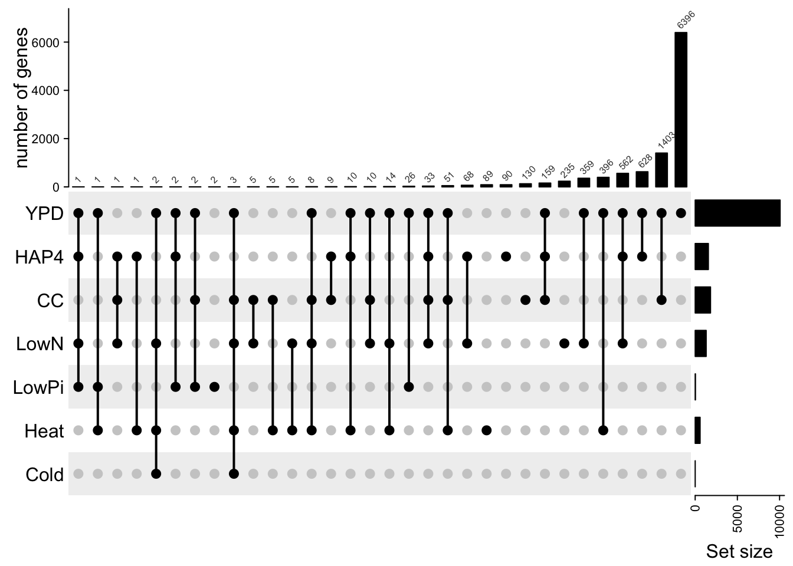
YPD is majority unique connections, but that’s mainly because it has so many more than any environment-specific network
all environments except Cold have at least one unique regulator-target pair (Cold only has 2 regulators and 3 targets total)
Note: here is where we could remove env-specific regulatory connections from YPD, if that is deemed appropriate. Because genes have semi-overlapping environmental conditions in which they are active, it feels more biologically meaningful to retain that same partial overlap in their regulatory connections
Given the adjacency matrix, outputs the connected portion of the graph in igraph format, good for plotting:
getConnectedGraph <- function(.adj) {
colnames(.adj) <- left_join(tibble(systematic = colnames(.adj)),
yeastract_lookup, by = "systematic") |>
dplyr::select(common) |> pull()
rownames(.adj) <- left_join(tibble(systematic = rownames(.adj)),
yeastract_lookup, by = "systematic") |>
dplyr::select(common) |> pull()
regnames <- rownames(.adj)[rowSums(.adj) > 0]
g <- graph_from_adjacency_matrix(.adj)
sub_g <- subgraph(g, which(igraph::degree(g) > 0))
V(sub_g)$isHub <- names(V(sub_g)) %in% regnames
V(sub_g)$vertex_size <- if_else(V(sub_g)$isHub, true = 7, false = 1)
V(sub_g)$color <- if_else(V(sub_g)$isHub, true = "steelblue", false = "orange")
V(sub_g)$vertex_label <- if_else(V(sub_g)$isHub, true = names(V(sub_g)), false = "")
return(sub_g)
}Visualizations of each environment-specific network, randomly downsampled if they have too many connections for igraph to handle
# plotting each environment
# downsampling to 2500 (there are 3500ish features in ypd) because igraph seems to have a problem plotting
# plot(getConnectedGraph(regmats$YPD)) # better as a heatmap
conn_thresh <- 1500 # number of edges to trigger downsample
down_thresh <- 2500 # number of nodes to downsample to
for (r in setdiff(names(regmats), "YPD")) {
mat <- regmats[[r]]
if (sum(mat) > conn_thresh) {
downsample_idxs <- sample(c(1:nrow(mat)), down_thresh, replace = FALSE)
g <- getConnectedGraph(mat[downsample_idxs, downsample_idxs])
}
else {
g <- getConnectedGraph(mat)
}
# version that makes the actual plot, commented out once it is run once, b/c igraph randomizes plot each time:
# pdf(paste0("paper_figures/Yeastract/",
# r, ".pdf"),
# width = 7, height = 7)
# plot(g, vertex.size = V(g)$vertex_size,
# vertex.label = V(g)$vertex_label,
# edge.arrow.size = 0.1,
# main = r, layout = layout_nicely(g),
# frame = TRUE)
# dev.off()
# version for website:
plot(g, vertex.size = V(g)$vertex_size,
vertex.label = V(g)$vertex_label,
edge.arrow.size = 0.1,
main = r, layout = layout_nicely(g),
frame = TRUE)
}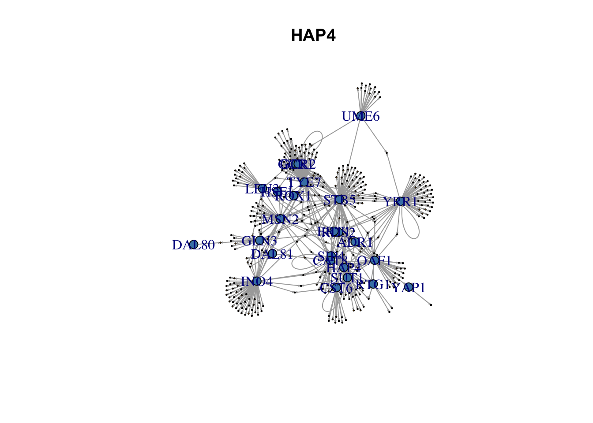
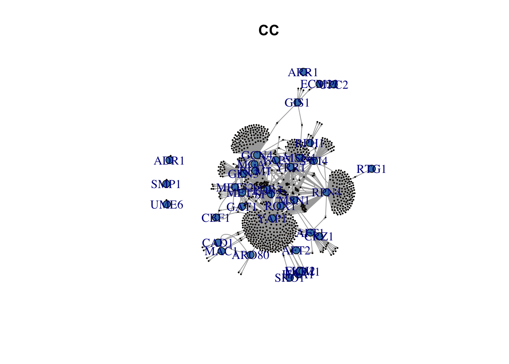
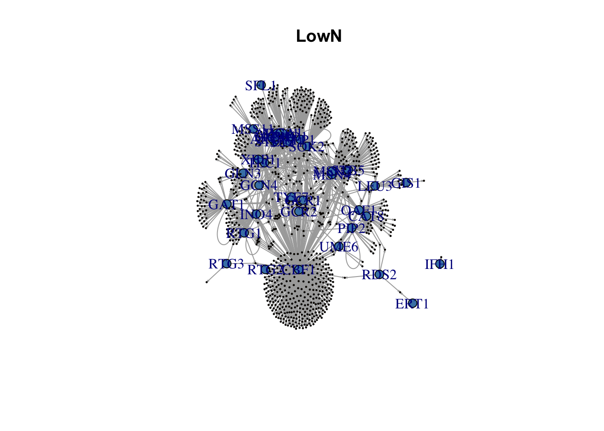
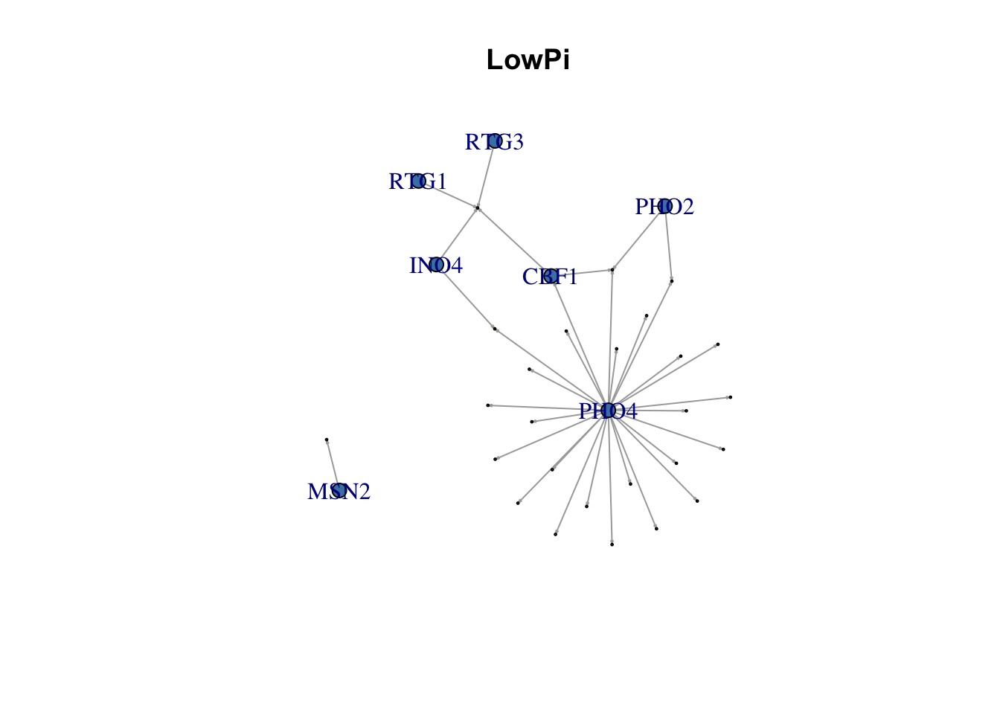
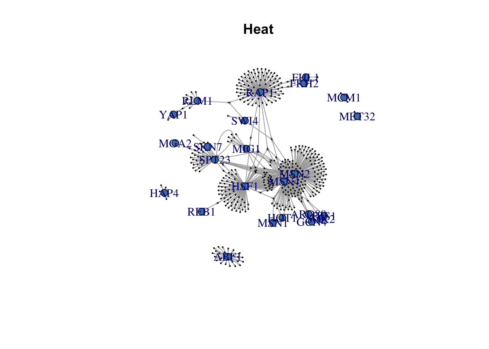
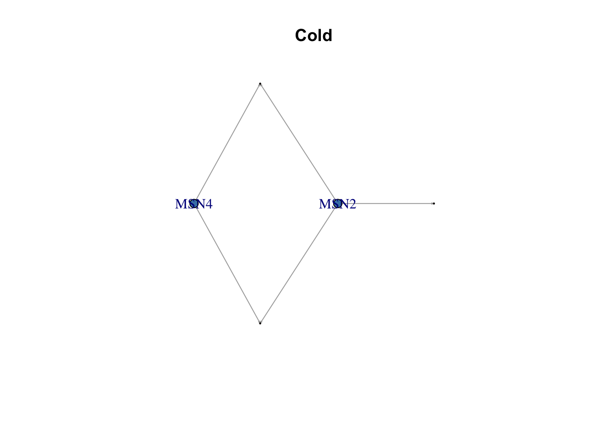
Proportions of incoming and outgoing connections by plasticity group. Barplots with mutually exclusive plasticity groups:
# helper for plotting function
getPlasticityGroup <- function(.cer, .par) {
if (.cer == 0 & .par == 0) {
return("conserved static")
}
if (.cer == .par) {
return("conserved plastic")
}
if (.cer == 0) {
return("Spar-unique")
}
if (.par == 0) {
return("Scer-unique")
}
else {
return("reversal")
}
}Plotting (very large amount of dplyr-ing the plot dataframe):
plotdf <- map(ExperimentNames, \(.e) {
expr_genes <- filter(finaldf, experiment == .e) |>
dplyr::select(gene_name) |> pull() |>
intersect(colnames(regmats$YPD))
tibble(gene_name = expr_genes,
in_degree_e = colSums(regmats[[.e]][expr_genes, expr_genes]),
in_degree_YPD = colSums(regmats$YPD[expr_genes, expr_genes]),
out_degree_e = rowSums(regmats[[.e]][expr_genes, expr_genes]),
out_degree_YPD = rowSums(regmats$YPD[expr_genes, expr_genes])) |>
right_join(filter(finaldf, experiment == .e),
by = "gene_name")
}) |> purrr::reduce(.f = bind_rows)
# NA degree means gene isn't in regmat
# (likely never had any connections in any environment),
# so setting these to a degree of 0
plotdf$in_degree_e[is.na(plotdf$in_degree_e)] <- 0
plotdf$in_degree_YPD[is.na(plotdf$in_degree_YPD)] <- 0
plotdf$out_degree_e[is.na(plotdf$out_degree_e)] <- 0
plotdf$out_degree_YPD[is.na(plotdf$out_degree_YPD)] <- 0
# getting plasticity group by gene/environment
plotdf$plasticity <- map2(plotdf$cer, plotdf$par, getPlasticityGroup) |> unlist()
totalsdf <- plotdf |> group_by(experiment) |>
dplyr::summarise(total_in_e = sum(in_degree_e),
total_in_YPD = sum(in_degree_YPD),
total_out_e = sum(out_degree_e),
total_out_YPD = sum(out_degree_YPD),
total_genes = n())
plotdf <- plotdf |> group_by(experiment, plasticity) |>
dplyr::summarise(n_in_e = sum(in_degree_e),
n_in_YPD = sum(in_degree_YPD),
n_out_e = sum(out_degree_e),
n_out_YPD = sum(out_degree_YPD),
n_genes = n()) |>
left_join(y = totalsdf,
by = "experiment") |>
mutate(prop_in_e = n_in_e/total_in_e,
prop_in_YPD = n_in_YPD/total_in_YPD,,
prop_out_e = n_out_e/total_out_e,
prop_out_YPD = n_out_YPD/total_out_YPD,
prop_genes = n_genes/total_genes) |>
pivot_longer(cols = c("prop_in_e", "prop_in_YPD", "prop_genes",
"prop_out_e", "prop_out_YPD"),
names_to = "prop_type", values_to = "proportion") |>
mutate(degree = if_else(grepl("in", prop_type),
true = "in",
false = if_else(grepl("out", prop_type),
true = "out",
false = "genes")),
network = if_else(grepl("YPD", prop_type),
true = "YPD",
false = if_else(grepl("genes", prop_type),
true = "genes",
false = "env")))## `summarise()` has grouped output by 'experiment'. You can override using the `.groups` argument.totalsdf <- pivot_longer(totalsdf,
cols = c("total_in_e", "total_in_YPD",
"total_out_e", "total_out_YPD",
"total_genes"),
names_to = "prop_type", values_to = "n") |>
mutate(degree = if_else(grepl("in", prop_type),
true = "in",
false = if_else(grepl("out", prop_type),
true = "out",
false = "genes")),
network = if_else(grepl("YPD", prop_type),
true = "YPD",
false = if_else(grepl("genes", prop_type),
true = "genes",
false = "env")))
plotdf$network <- factor(plotdf$network, levels = c("genes", "YPD", "env"),
labels = c("number of genes", "un-stressed network\nconnections",
"environment-specific network\nconnections"))
totalsdf$network <- factor(totalsdf$network, levels = c("genes", "YPD", "env"),
labels = c("number of genes", "un-stressed network\nconnections",
"environment-specific network\nconnections"))
# in degree
p_in <- ggplot(filter(plotdf, degree %in% c("in", "genes")), aes(x = network, y = proportion)) +
geom_bar(aes(fill = plasticity), position = "stack", stat = "identity") +
geom_text(data = filter(totalsdf, degree %in% c("in", "genes")), aes(x = network, label = n), y = 1.1) +
ylim(c(0, 1.1)) +
scale_fill_discrete(limits = colordf[colordf$scheme == "plasticity",]$limits,
type = colordf[colordf$scheme == "plasticity",]$type) +
ylab("%") +
xlab("") +
ggtitle("incoming connections") +
theme_classic() +
theme(axis.text.x = element_text(angle = 90, hjust = 0.95, vjust = 0.2)) +
facet_wrap(~factor(experiment, levels = ExperimentNames, labels = LongExperimentNames))
# out degree
p_out <- ggplot(filter(plotdf, degree %in% c("out", "genes")), aes(x = network, y = proportion)) +
geom_bar(aes(fill = plasticity), position = "stack", stat = "identity") +
geom_text(data = filter(totalsdf, degree %in% c("out", "genes")), aes(x = network, label = n), y = 1.1) +
ylim(c(0, 1.1)) +
scale_fill_discrete(limits = colordf[colordf$scheme == "plasticity",]$limits,
type = colordf[colordf$scheme == "plasticity",]$type) +
ylab("%") +
xlab("") +
ggtitle("outgoing connections") +
theme_classic() +
theme(axis.text.x = element_text(angle = 90, hjust = 0.95, vjust = 0.2)) +
facet_wrap(~factor(experiment, levels = ExperimentNames, labels = LongExperimentNames))
# plotting
ggarrange(p_in, p_out, nrow = 1, ncol = 2, common.legend = TRUE, legend = "bottom")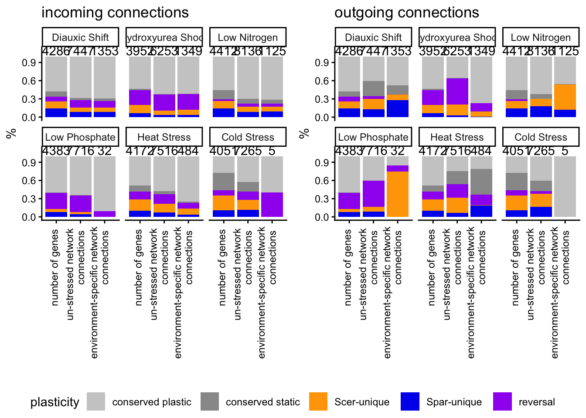
pdf("paper_figures/Supplement/propConnectionsBars.pdf",
width = 9, height = 7)
ggarrange(p_in, p_out, nrow = 1, ncol = 2, common.legend = TRUE, legend = "bottom")
dev.off()## quartz_off_screen
## 2In the stacked bars, we saw that regulatory out degree had very unequal representation of plasticity groups, particularly an over-representation of single-species plasticiy connections Here we want to compare regulators and their regulons from each plasticity group by visualizing first the regulator expression across environments and then their regulon (or at least the most common plasticity pattern)
First making a dataframe of each regulator in each environment and the number of connections it has
# first how many regulators from each environment are from each plasticity group?
# and how many connections do each of them have?
tfdf <- map(ExperimentNames, \(.e) {
expr_genes <- filter(finaldf, experiment == .e) |>
dplyr::select(gene_name) |> pull() |>
intersect(colnames(regmats$YPD))
tibble(gene_name = expr_genes,
out_degree_e = rowSums(regmats[[.e]][expr_genes, expr_genes])) |>
right_join(filter(finaldf, experiment == .e),
by = "gene_name")
}) |> purrr::reduce(.f = bind_rows)
tfdf$out_degree_e[is.na(tfdf$out_degree_e)] <- 0
tfdf <- tfdf |> filter(out_degree_e != 0)
tfdf$plasticity <- map2(tfdf$cer, tfdf$par, getPlasticityGroup) |> unlist()# getting numbers for figure
# nTargets
for (e in ExperimentNames) {
cat(e, "nTargets:", sum(colSums(regmats[[e]]) != 0), "\n")
}## HAP4 nTargets: 1065
## CC nTargets: 1267
## LowN nTargets: 929
## LowPi nTargets: 27
## Heat nTargets: 419
## Cold nTargets: 3# nRegulators
tfdf |> group_by(experiment) |> summarise(nRegulators = n())## # A tibble: 6 × 2
## experiment nRegulators
## <chr> <int>
## 1 CC 35
## 2 Cold 2
## 3 HAP4 27
## 4 Heat 20
## 5 LowN 30
## 6 LowPi 6Note: waffle package uses plyr, which superseeds dplyr::summarise, causing errors if we don’t unload it once the waffle plots are done
library(waffle)
plotdf <- tfdf |>
dplyr::count(plasticity, experiment, out_degree_e, gene_name) |>
arrange(experiment, desc(out_degree_e))
#arrange(experiment, plasticity)
# manually setting x and y of out degree labels
# cause waffle plot doesn't currently allow labels
# NOTE: Flip=TRUE needs to be set on geom_waffle for this to work
nrows <- 5
ncols <- max(table(plotdf$experiment))/nrows
plotdf$x <- ((c(1:nrow(plotdf)) - rank(plotdf$experiment, ties.method = "min")) %% nrows) + 1
plotdf$y <- map(as.numeric(table(plotdf$experiment)), \(x) {
full_vec <- sapply(c(1:ncols), \(i) {rep(i, times = nrows)}) |> c()
return(full_vec[c(1:x)])
}) |> unlist()
p <- ggplot(plotdf, aes(fill = plasticity, values = n)) +
geom_waffle(n_rows = nrows,
size = 1,
colour = "white",
flip = TRUE) +
geom_text(aes(x = x, y = y, label = out_degree_e), color = "white") +
scale_fill_discrete(
type = colordf[colordf$scheme == "plasticity",]$type,
limits = colordf[colordf$scheme == "plasticity",]$limits) +
facet_wrap(~factor(experiment, levels = ExperimentNames, labels = LongExperimentNames),
nrow = 1) +
theme_classic() +
theme(legend.position = "none",
axis.ticks = element_blank(),
axis.text = element_blank()) +
xlab("") +
ylab("") +
ggtitle("targets per regulator")
p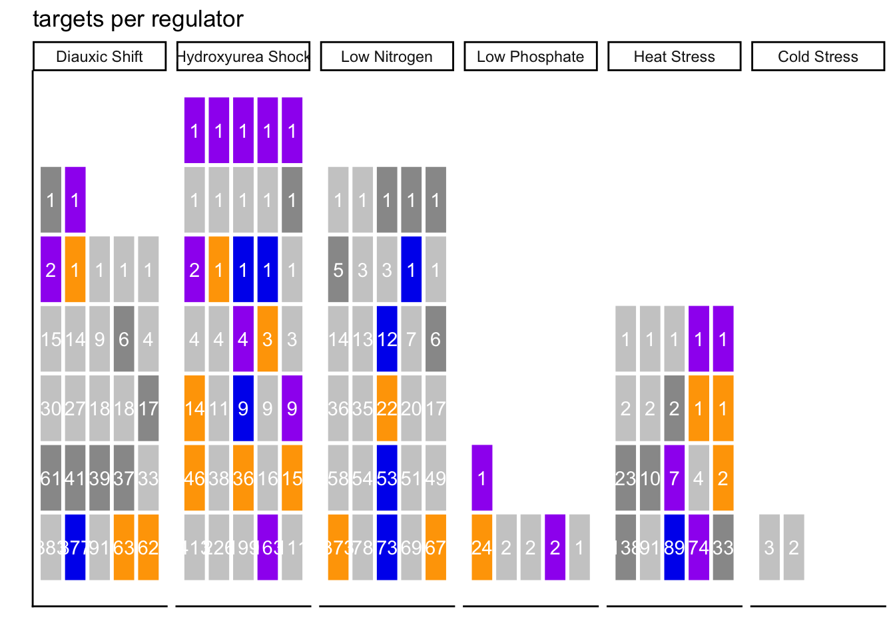
pdf("paper_figures/Yeastract/regulator_waffle.pdf",
width = 10.5, height = 2.5)
p
dev.off()## quartz_off_screen
## 2### Also creating YPD waffle plot where genes are colored by their plasticity group in each environment
nTargets_thresh <- 21
# using a common set of genes in all environments, so regulators can be in the same
# order in each waffle plot, by desc(nTargets)
ypd_genes <- intersect(x = names(table(finaldf$gene_name))[table(finaldf$gene_name) == length(ExperimentNames)],
y = colnames(regmats$YPD))
ypddf <- map(ExperimentNames, \(.e) {
tibble(gene_name = ypd_genes,
out_degree_ypd = rowSums(regmats[["YPD"]][ypd_genes,
ypd_genes])) |>
right_join(filter(finaldf, experiment == .e & gene_name %in% ypd_genes),
by = "gene_name")
}) |> purrr::reduce(.f = bind_rows)
ypddf$out_degree_ypd[is.na(ypddf$out_degree_ypd)] <- 0
ypddf <- ypddf |> filter(out_degree_ypd > nTargets_thresh) # filtering out lowly connected regulators
table(ypddf$experiment) # should still have same regulator set across environments##
## CC Cold HAP4 Heat LowN LowPi
## 36 36 36 36 36 36ypddf$plasticity <- map2(ypddf$cer, ypddf$par, getPlasticityGroup) |> unlist()
plotdf <- ypddf |>
dplyr::count(plasticity, experiment, out_degree_ypd, gene_name) |>
arrange(experiment, desc(out_degree_ypd))
# organizing count labels
nrows <- 6
ncols <- ceiling(max(table(plotdf$experiment))/nrows)
plotdf$x <- ((c(1:nrow(plotdf)) - rank(plotdf$experiment, ties.method = "min")) %% nrows) + 1
plotdf$y <- map(as.numeric(table(plotdf$experiment)), \(x) {
full_vec <- sapply(c(1:ncols), \(i) {
rep(i, times = nrows)
}) |> c()
return(full_vec[c(1:x)])
}) |> unlist()
#arrange(experiment, plasticity)
p <- ggplot(plotdf, aes(fill = plasticity, values = n)) +
geom_waffle(n_rows = nrows,
size = 1,
colour = "white",
flip = TRUE) +
geom_text(aes(x = x, y = y, label = out_degree_ypd), color = "white") +
scale_fill_discrete(
type = colordf[colordf$scheme == "plasticity",]$type,
limits = colordf[colordf$scheme == "plasticity",]$limits) +
facet_wrap(~factor(experiment, levels = ExperimentNames, labels = LongExperimentNames),
nrow = 1) +
theme_classic() +
theme(legend.position = "none",
axis.ticks = element_blank(),
axis.text = element_blank()) +
xlab("") +
ylab("") +
ggtitle("targets per regulator (unstressed networks)")
p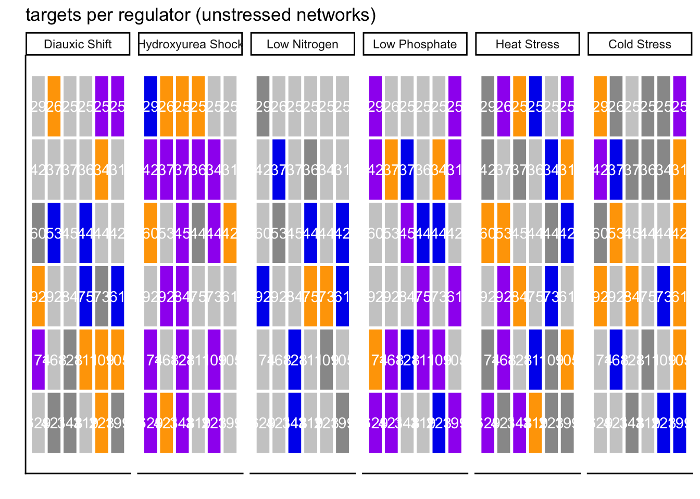
pdf("paper_figures/Yeastract/regulator_waffle_YPD.pdf",
width = 11.5, height = 2.5)
p
dev.off()## quartz_off_screen
## 2# unloading waffle
detach("package:waffle", unload=TRUE)plotHomeAndAltEnvironments <- function(.tf_common,
.reg_idxs = NULL,
.e, .e2, .regulator_plotlims = NULL,
.regulon_plotlims = NULL,
.include_hybrid = TRUE,
.regulator_normalization = "log2",
.regulon_normalization = "scale") {
e_name <- LongExperimentNames[ExperimentNames == .e]
e2_name <- LongExperimentNames[ExperimentNames == .e2]
### Home environment
# regulator
reg_idx <- yeastract_lookup |> filter(common == .tf_common) |>
dplyr::select(all_of("systematic")) |> pull()
p_regulator <- annotate_figure(plotGenes(.gene_idxs = reg_idx, .quartet = .include_hybrid,
.normalization = .regulator_normalization,
.plotlims = .regulator_plotlims,
.experiment_name = .e), top = .tf_common)
# regulon
if (is.null(.reg_idxs)) {
regulon_idxs <- filter(regdf, environment == .e & regulator == reg_idx) |>
dplyr::select(target) |> pull() |>
intersect(y = finaldf[finaldf$experiment == .e,]$gene_name)
} else {
regulon_idxs <- intersect(x = .reg_idxs,
y = finaldf[finaldf$experiment == .e,]$gene_name)
}
p_regulon <- annotate_figure(plotGenes(.gene_idxs = regulon_idxs,
.normalization = .regulon_normalization,
.plotlims = .regulon_plotlims,
.experiment_name = .e,
.quartet = .include_hybrid),
top = paste0(.tf_common, " regulon (", length(regulon_idxs), " genes)"))
p_home <- annotate_figure(ggarrange(p_regulator, p_regulon, nrow = 2, ncol = 1),
top = e_name)
### Alt environment
# regulator
p_regulator <- annotate_figure(plotGenes(.gene_idxs = reg_idx, .quartet = .include_hybrid,
.normalization = .regulator_normalization,
.plotlims = .regulator_plotlims,
.experiment_name = .e2), top = .tf_common)
# regulon
p_regulon <- annotate_figure(plotGenes(.gene_idxs = regulon_idxs,
.normalization = .regulon_normalization,
.plotlims = .regulon_plotlims,
.experiment_name = .e2,
.quartet = .include_hybrid),
top = paste0(.tf_common, " regulon (", length(regulon_idxs), " genes)"))
p_divEnv <- annotate_figure(ggarrange(p_regulator, p_regulon, nrow = 2, ncol = 1),
top = e2_name)
return(ggarrange(p_home, p_divEnv, nrow = 1, ncol = 2))
}regulator_ylims <- c(4.5, 10)
regulon_ylims <- NULL
p <- plotHomeAndAltEnvironments(.tf_common = "PHO4", .e = "LowPi",
.e2 = "HAP4", .regulator_plotlims = regulator_ylims,
.regulon_plotlims = regulon_ylims)
p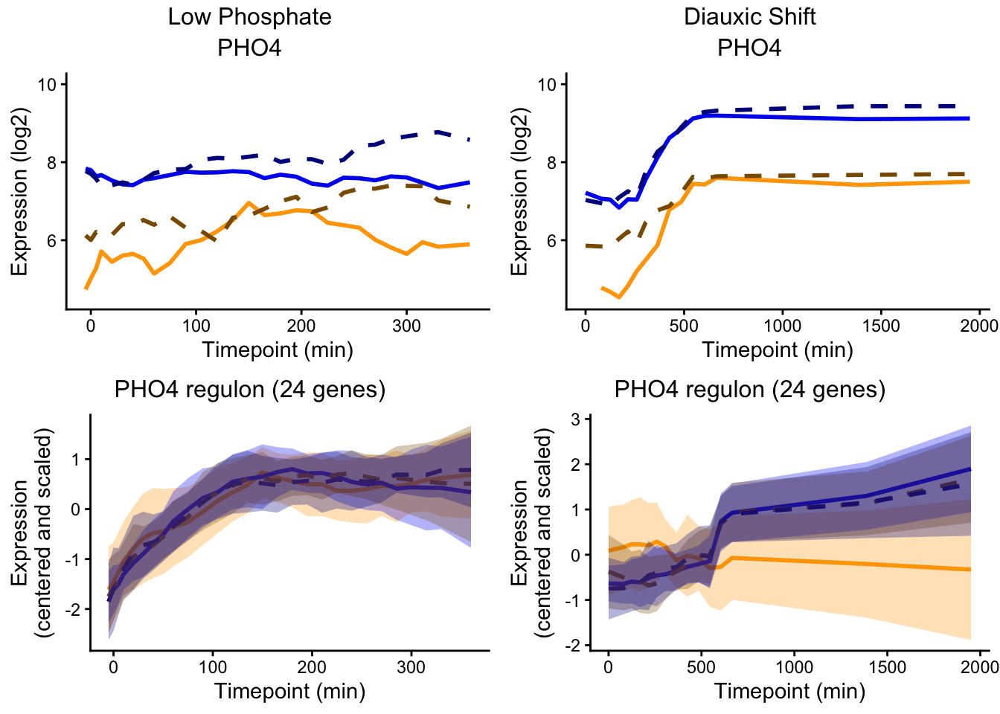
pdf(paste0("paper_figures/Yeastract/PHO4.pdf"),
width = 6, height = 6)
p
dev.off()## quartz_off_screen
## 2p <- plotHomeAndAltEnvironments(.tf_common = "GCN4", .e = "CC",
.e2 = "Heat", .regulator_plotlims = c(8, 12))
p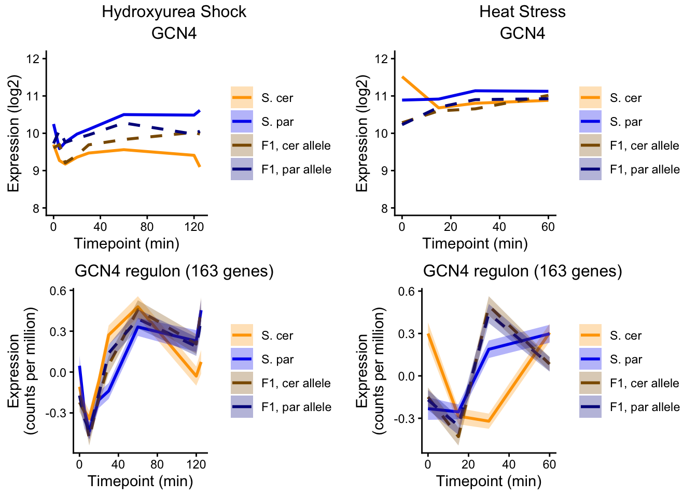
pdf(paste0("paper_figures/Yeastract/GCN4.pdf"),
width = 6, height = 6)
p
dev.off()## quartz_off_screen
## 2p <- plotHomeAndAltEnvironments(.tf_common = "HSF1", .e = "Heat",
.e2 = "LowPi", .regulator_plotlims = c(5, 8))
p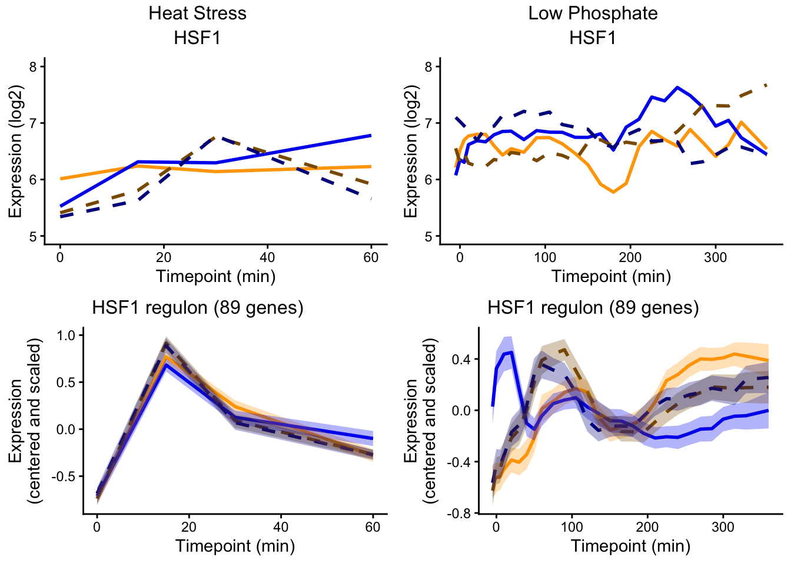
pdf(paste0("paper_figures/Yeastract/HSF1.pdf"),
width = 6, height = 6)
p
dev.off()## quartz_off_screen
## 2RPN4 appears to have a lower YPD expression in Scer that is based in cis. Coupled to stronger Diauxic Shift-induced activation in Scer that is based in trans. Certain regulon members reverse plasticity in both directions.
test_tf <- "RPN4"
test_cer <- 1
test_par <- 2
test_home <- "HAP4"
test_alt <- "LowN"
test_reversal_idxs <- finaldf |> filter(experiment == test_home &
cer == test_cer & par == test_par) |>
dplyr::select(gene_name) |> pull()
test_idxs <- regdf |> filter(regulator_common == test_tf & target %in% test_reversal_idxs) |>
dplyr::select(target) |> pull()
plotHomeAndAltEnvironments(.tf_common = test_tf, .e = test_home, .e2 = test_alt,
.reg_idxs = test_idxs, .regulon_normalization = "log2")## `summarise()` has grouped output by 'group_id', 'experiment'. You can override using the
## `.groups` argument.## Warning: Removed 60 rows containing missing values or values outside the scale range
## (`geom_ribbon()`).## `summarise()` has grouped output by 'group_id', 'experiment'. You can override using the
## `.groups` argument.
## `summarise()` has grouped output by 'group_id', 'experiment'. You can override using the
## `.groups` argument.## Warning: Removed 12 rows containing missing values or values outside the scale range
## (`geom_ribbon()`).## `summarise()` has grouped output by 'group_id', 'experiment'. You can override using the
## `.groups` argument.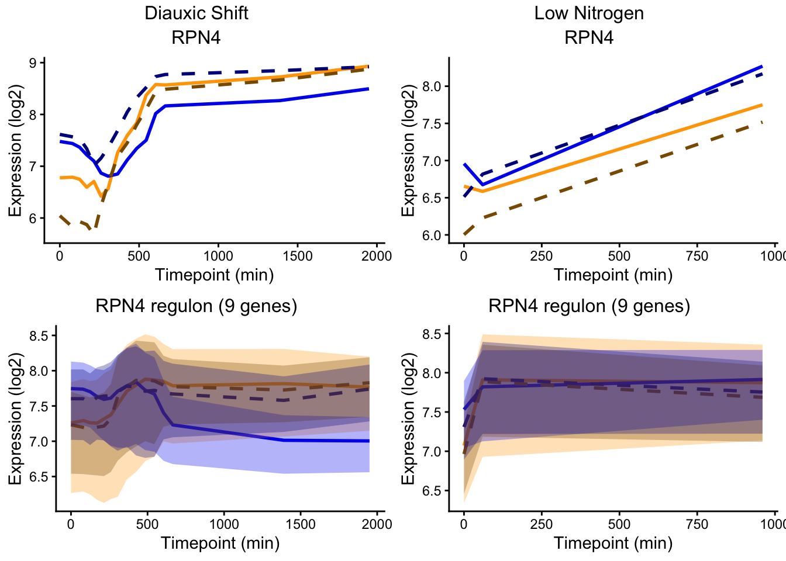
“Volcano”-style plots of log2 fold change on the x axis and percent of regulon that is divergent on the y axis (where p-value would normally go)
There are 4 plots total: does
plotdf <- regdf |> filter(environment != "YPD") |>
full_join(y = finaldf,
by = c("target"="gene_name",
"environment"="experiment")) |>
group_by(regulator, regulator_common, environment) |>
summarise(n_div_plast = sum(plasticity == "diverged",
na.rm = TRUE),
n = n(),
pct_div_plast = n_div_plast/n,
mean_cor = mean(cor_parents, na.rm = TRUE)) |>
filter(n >= 20) |>
left_join(y = dplyr::select(finaldf, gene_name,
experiment, effect_size_species),
by = c("regulator"="gene_name",
"environment"="experiment"))## `summarise()` has grouped output by 'regulator', 'regulator_common'. You can override using the
## `.groups` argument.# R-squarred
test <- lm(mean_cor ~ effect_size_species, data = plotdf)
summary(test)##
## Call:
## lm(formula = mean_cor ~ effect_size_species, data = plotdf)
##
## Residuals:
## Min 1Q Median 3Q Max
## -0.23728 -0.10458 -0.02099 0.10679 0.37662
##
## Coefficients:
## Estimate Std. Error t value Pr(>|t|)
## (Intercept) 0.61098 0.02278 26.818 <2e-16 ***
## effect_size_species 0.06823 0.02822 2.418 0.02 *
## ---
## Signif. codes: 0 '***' 0.001 '**' 0.01 '*' 0.05 '.' 0.1 ' ' 1
##
## Residual standard error: 0.149 on 42 degrees of freedom
## (12 observations deleted due to missingness)
## Multiple R-squared: 0.1222, Adjusted R-squared: 0.1013
## F-statistic: 5.848 on 1 and 42 DF, p-value: 0.02001# plot
p_parent_plast <- ggplot(plotdf, aes(x = effect_size_species, y = mean_cor)) +
geom_point(aes(color = environment)) +
scale_color_discrete(limits = colordf$limits[colordf$scheme == "experiment"],
type = colordf$type[colordf$scheme == "experiment"]) +
geom_text(aes(label = regulator_common),
check_overlap = TRUE, nudge_y = 0.025) +
#geom_vline(xintercept = c(-log2(1.5), log2(1.5))) +
geom_smooth(method = "lm") +
theme_classic() +
#theme(legend.position = "none") +
xlab("log2 fold change of regulator\nbetween species") +
ylab("average expression correlation of\ntarget genes between species") +
ggtitle(paste0("R-squarred = ",
round(summary(test)$r.squared, digits = 2)))
p_parent_plast## `geom_smooth()` using formula = 'y ~ x'## Warning: Removed 12 rows containing non-finite outside the scale range (`stat_smooth()`).## Warning: Removed 12 rows containing missing values or values outside the scale range
## (`geom_point()`).## Warning: Removed 12 rows containing missing values or values outside the scale range
## (`geom_text()`).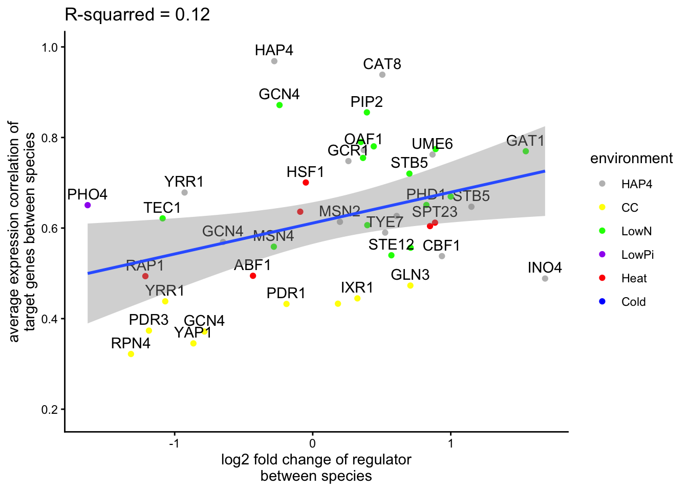
plotdf <- regdf |> filter(environment != "YPD") |>
full_join(y = finaldf,
by = c("target"="gene_name",
"environment"="experiment")) |>
group_by(regulator, regulator_common, environment) |>
summarise(n_div_plast = sum(plasticity == "diverged",
na.rm = TRUE),
n = n(),
pct_div_plast = n_div_plast/n,
mean_cor = mean(cor_parents, na.rm = TRUE)) |>
filter(n >= 20) |>
left_join(y = dplyr::select(finaldf, gene_name,
experiment, effect_size_allele),
by = c("regulator"="gene_name",
"environment"="experiment"))## `summarise()` has grouped output by 'regulator', 'regulator_common'. You can override using the
## `.groups` argument.# R-squarred
test <- lm(mean_cor ~ effect_size_allele, data = plotdf)
summary(test)##
## Call:
## lm(formula = mean_cor ~ effect_size_allele, data = plotdf)
##
## Residuals:
## Min 1Q Median 3Q Max
## -0.23784 -0.09821 -0.00347 0.10178 0.33573
##
## Coefficients:
## Estimate Std. Error t value Pr(>|t|)
## (Intercept) 0.61824 0.02266 27.286 <2e-16 ***
## effect_size_allele 0.07851 0.03479 2.256 0.0293 *
## ---
## Signif. codes: 0 '***' 0.001 '**' 0.01 '*' 0.05 '.' 0.1 ' ' 1
##
## Residual standard error: 0.1502 on 42 degrees of freedom
## (12 observations deleted due to missingness)
## Multiple R-squared: 0.1081, Adjusted R-squared: 0.08687
## F-statistic: 5.091 on 1 and 42 DF, p-value: 0.02932# plot
p_hybrid_plast <- ggplot(plotdf, aes(x = effect_size_allele, y = mean_cor)) +
geom_point(aes(color = environment)) +
scale_color_discrete(limits = colordf$limits[colordf$scheme == "experiment"],
type = colordf$type[colordf$scheme == "experiment"]) +
geom_text(aes(label = regulator_common),
check_overlap = TRUE, nudge_y = 0.025) +
geom_smooth(method = "lm") +
#geom_vline(xintercept = c(-log2(1.5), log2(1.5))) +
theme_classic() +
#theme(legend.position = "none") +
xlab("log2 fold change of regulator\nbetween hybrid alleles") +
ylab("average expression correlation of\ntarget genes between species") +
ggtitle(paste0("R-squarred = ",
round(summary(test)$r.squared, digits = 2)))
p_hybrid_plast## `geom_smooth()` using formula = 'y ~ x'## Warning: Removed 12 rows containing non-finite outside the scale range (`stat_smooth()`).## Warning: Removed 12 rows containing missing values or values outside the scale range
## (`geom_point()`).## Warning: Removed 12 rows containing missing values or values outside the scale range
## (`geom_text()`).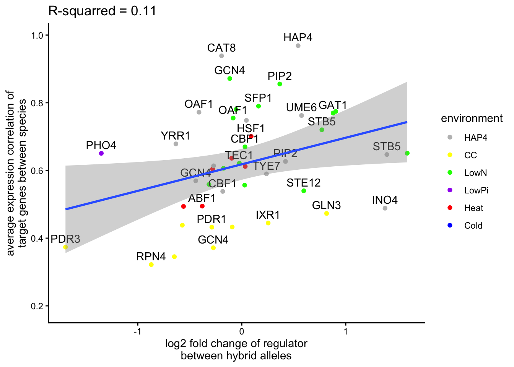
plotdf <- regdf |> filter(environment != "YPD") |>
inner_join(y = finaldf,
by = c("target"="gene_name",
"environment"="experiment")) |>
group_by(regulator, regulator_common, environment) |>
summarise(n_div_level = sum(level == "diverged",
na.rm = TRUE),
n = n(),
mean_log2fc = mean(effect_size_species, na.rm = TRUE),
pct_div_level = n_div_level/n) |>
filter(n >= 20) |>
left_join(y = dplyr::select(finaldf, gene_name,
experiment, effect_size_species),
by = c("regulator"="gene_name",
"environment"="experiment"))## `summarise()` has grouped output by 'regulator', 'regulator_common'. You can override using the
## `.groups` argument.# lm test for R^2 value
test <- lm(mean_log2fc ~ effect_size_species, data = plotdf)
summary(test)##
## Call:
## lm(formula = mean_log2fc ~ effect_size_species, data = plotdf)
##
## Residuals:
## Min 1Q Median 3Q Max
## -0.41001 -0.16683 -0.02194 0.08004 0.47670
##
## Coefficients:
## Estimate Std. Error t value Pr(>|t|)
## (Intercept) 0.13999 0.03555 3.938 0.00033 ***
## effect_size_species 0.07441 0.04327 1.719 0.09346 .
## ---
## Signif. codes: 0 '***' 0.001 '**' 0.01 '*' 0.05 '.' 0.1 ' ' 1
##
## Residual standard error: 0.2257 on 39 degrees of freedom
## (4 observations deleted due to missingness)
## Multiple R-squared: 0.07047, Adjusted R-squared: 0.04663
## F-statistic: 2.957 on 1 and 39 DF, p-value: 0.09346# plot
p_parent_lev <- ggplot(plotdf, aes(x = effect_size_species, y = mean_log2fc)) +
geom_point(aes(color = environment)) +
scale_color_discrete(limits = colordf$limits[colordf$scheme == "experiment"],
type = colordf$type[colordf$scheme == "experiment"]) +
geom_text(aes(label = regulator_common),
check_overlap = TRUE, nudge_y = 0.025) +
ggtitle(paste0("R-squarred = ",
round(summary(test)$r.squared, digits = 2))) +
theme_classic() +
#theme(legend.position = "none") +
xlab("log2 fold change of regulator\nbetween species") +
ylab("average log2 fold change of\ntarget genes between species") +
geom_smooth(method = "lm")
p_parent_lev## `geom_smooth()` using formula = 'y ~ x'## Warning: Removed 4 rows containing non-finite outside the scale range (`stat_smooth()`).## Warning: Removed 4 rows containing missing values or values outside the scale range
## (`geom_point()`).## Warning: Removed 4 rows containing missing values or values outside the scale range
## (`geom_text()`).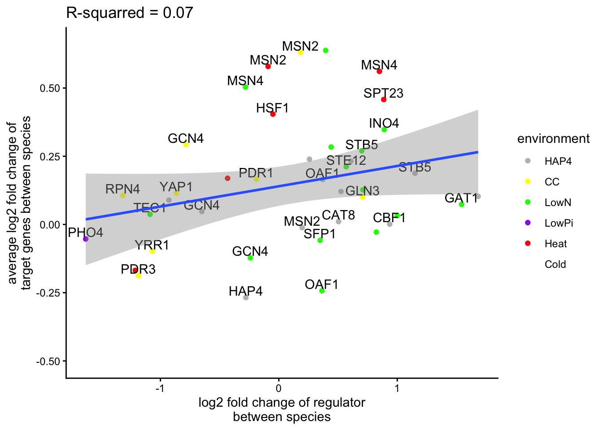
plotdf <- regdf |> filter(environment != "YPD") |>
inner_join(y = finaldf,
by = c("target"="gene_name",
"environment"="experiment")) |>
group_by(regulator, regulator_common, environment) |>
summarise(n_div_level = sum(level == "diverged",
na.rm = TRUE),
n = n(),
mean_log2fc = mean(effect_size_allele, na.rm = TRUE),
pct_div_level = n_div_level/n) |>
filter(n >= 20) |>
left_join(y = dplyr::select(finaldf, gene_name,
experiment, effect_size_allele),
by = c("regulator"="gene_name",
"environment"="experiment"))## `summarise()` has grouped output by 'regulator', 'regulator_common'. You can override using the
## `.groups` argument.# lm test for R^2 value
test <- lm(mean_log2fc ~ effect_size_allele, data = plotdf)
summary(test)##
## Call:
## lm(formula = mean_log2fc ~ effect_size_allele, data = plotdf)
##
## Residuals:
## Min 1Q Median 3Q Max
## -0.40685 -0.06366 0.00371 0.07140 0.21287
##
## Coefficients:
## Estimate Std. Error t value Pr(>|t|)
## (Intercept) -0.02211 0.01788 -1.236 0.223681
## effect_size_allele 0.11060 0.02689 4.113 0.000195 ***
## ---
## Signif. codes: 0 '***' 0.001 '**' 0.01 '*' 0.05 '.' 0.1 ' ' 1
##
## Residual standard error: 0.1145 on 39 degrees of freedom
## (4 observations deleted due to missingness)
## Multiple R-squared: 0.3025, Adjusted R-squared: 0.2846
## F-statistic: 16.91 on 1 and 39 DF, p-value: 0.0001952# plot
p_hybrid_lev <- ggplot(plotdf, aes(x = effect_size_allele, y = mean_log2fc)) +
geom_point(aes(color = environment)) +
scale_color_discrete(limits = colordf$limits[colordf$scheme == "experiment"],
type = colordf$type[colordf$scheme == "experiment"]) +
geom_text(aes(label = regulator_common),
check_overlap = TRUE, nudge_y = 0.025) +
ggtitle(paste0("R-squarred = ",
round(summary(test)$r.squared, digits = 2))) +
theme_classic() +
xlab("log2 fold change of regulator\nbetween hybrid alleles") +
ylab("average log2 fold change of\ntarget genes between species") +
geom_smooth(method = "lm")
p_hybrid_lev## `geom_smooth()` using formula = 'y ~ x'## Warning: Removed 4 rows containing non-finite outside the scale range (`stat_smooth()`).## Warning: Removed 4 rows containing missing values or values outside the scale range
## (`geom_point()`).## Warning: Removed 4 rows containing missing values or values outside the scale range
## (`geom_text()`).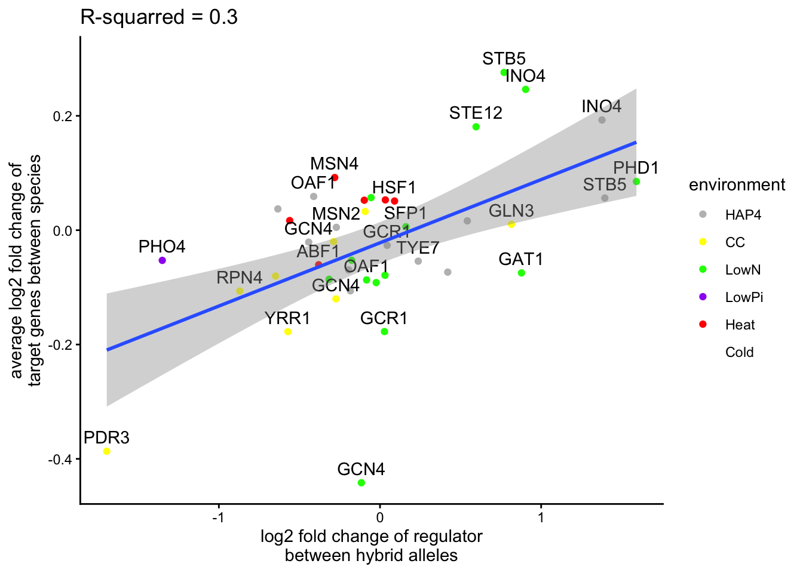
All 4 plots:
p <- ggarrange(p_parent_lev, p_hybrid_lev,
p_parent_plast, p_hybrid_plast,
nrow = 2, ncol = 2, common.legend = TRUE,
legend = "bottom")## `geom_smooth()` using formula = 'y ~ x'## Warning: Removed 4 rows containing non-finite outside the scale range (`stat_smooth()`).## Warning: Removed 4 rows containing missing values or values outside the scale range
## (`geom_point()`).## Warning: Removed 4 rows containing missing values or values outside the scale range
## (`geom_text()`).## `geom_smooth()` using formula = 'y ~ x'## Warning: Removed 4 rows containing non-finite outside the scale range (`stat_smooth()`).## Warning: Removed 4 rows containing missing values or values outside the scale range
## (`geom_point()`).## Warning: Removed 4 rows containing missing values or values outside the scale range
## (`geom_text()`).## `geom_smooth()` using formula = 'y ~ x'## Warning: Removed 4 rows containing non-finite outside the scale range (`stat_smooth()`).## Warning: Removed 4 rows containing missing values or values outside the scale range
## (`geom_point()`).## Warning: Removed 4 rows containing missing values or values outside the scale range
## (`geom_text()`).## `geom_smooth()` using formula = 'y ~ x'## Warning: Removed 12 rows containing non-finite outside the scale range (`stat_smooth()`).## Warning: Removed 12 rows containing missing values or values outside the scale range
## (`geom_point()`).## Warning: Removed 12 rows containing missing values or values outside the scale range
## (`geom_text()`).## `geom_smooth()` using formula = 'y ~ x'## Warning: Removed 12 rows containing non-finite outside the scale range (`stat_smooth()`).## Warning: Removed 12 rows containing missing values or values outside the scale range
## (`geom_point()`).## Warning: Removed 12 rows containing missing values or values outside the scale range
## (`geom_text()`).p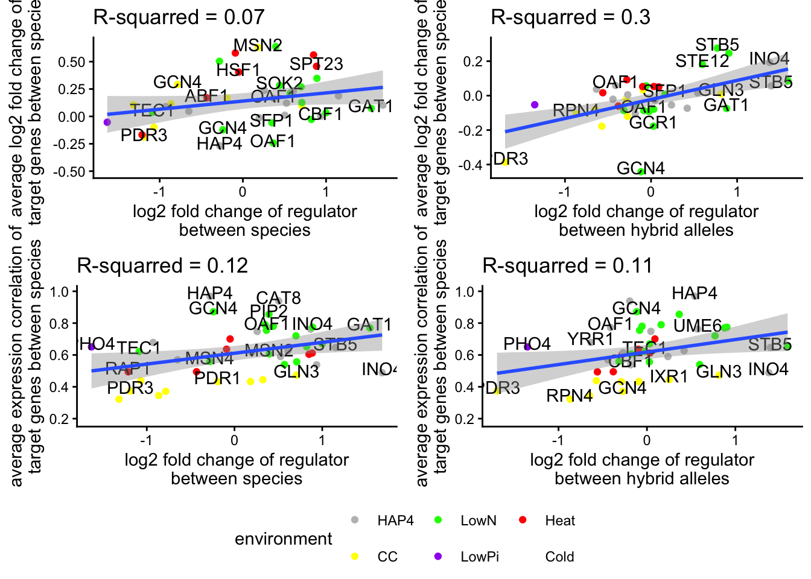
pdf("paper_figures/Supplement/regulator_level.pdf",
width = 7, height = 7)
p
dev.off()## quartz_off_screen
## 2# might be needed as a supplemental figure to point out that plasticity reveresals
# and conserved plasticity have the highest expression variation
# across both species and environments
load("data_files/Cleaned_Counts.RData")
cer_counts <- counts[, sample_info$organism == "cer" &
sample_info$experiment == "LowN"]
par_counts <- counts[, sample_info$organism == "par" &
sample_info$experiment == "LowN"]
plotdf <- bind_rows(x = tibble(gene_name = rownames(cer_counts),
mean_expr = rowMeans(cer_counts),
var_expr = rowVars(cer_counts),
organism = "cer"),
y = tibble(gene_name = rownames(par_counts),
mean_expr = rowMeans(par_counts),
var_expr = rowVars(par_counts),
organism = "par")) |>
pivot_wider(id_cols = "gene_name",
names_from = "organism",
values_from = c("mean_expr", "var_expr")) |>
right_join(finaldf, by = c("gene_name"))
plotdf$plasticityCategory <- map2(plotdf$cer, plotdf$par, getPlasticityGroup) |> unlist()
# Var/Mean by plasticity category, Scer
p1 <- ggplot(plotdf, aes(x = log2(mean_expr_cer))) +
geom_density(aes(fill = plasticityCategory), alpha = 0.5) +
theme_classic() +
scale_fill_discrete(limits = colordf[colordf$scheme == "plasticity",]$limits,
type = colordf[colordf$scheme == "plasticity",]$type) +
xlab("Mean Expression (log2)")
p2 <- ggplot(plotdf, aes(x = log2(var_expr_cer))) +
geom_density(aes(fill = plasticityCategory), alpha = 0.5) +
theme_classic() +
scale_fill_discrete(limits = colordf[colordf$scheme == "plasticity",]$limits,
type = colordf[colordf$scheme == "plasticity",]$type) +
xlab("Var Expression (log2)")
annotate_figure(ggarrange(p1, p2, common.legend = TRUE,
legend = "right", ncol = 1, nrow = 2), top = "Scer")## Warning: Removed 2 rows containing non-finite outside the scale range (`stat_density()`).
## Removed 2 rows containing non-finite outside the scale range (`stat_density()`).
## Removed 2 rows containing non-finite outside the scale range (`stat_density()`).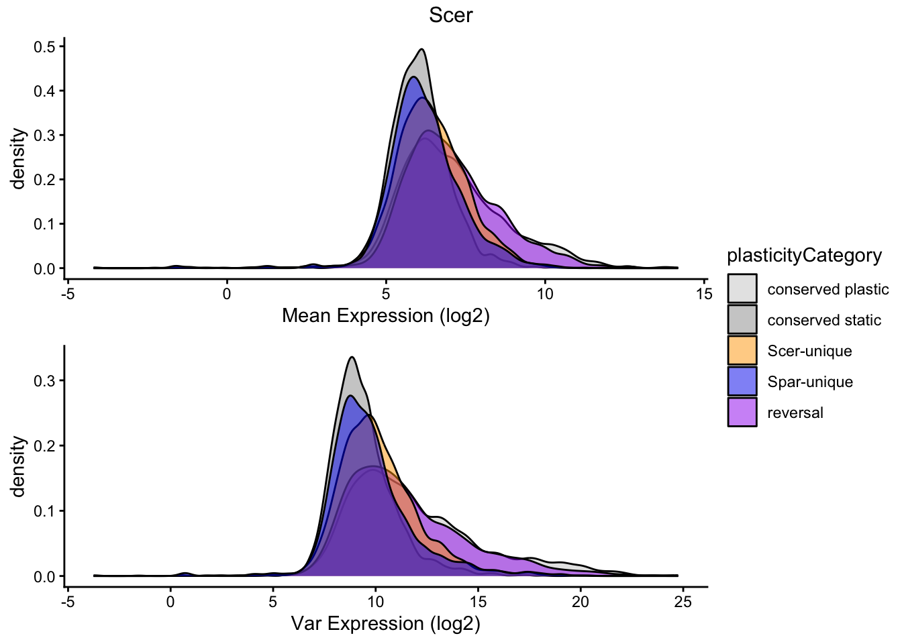
# Var/Mean by plasticity category, Spar
p1 <- ggplot(plotdf, aes(x = log2(mean_expr_par))) +
geom_density(aes(fill = plasticityCategory), alpha = 0.5) +
theme_classic() +
scale_fill_discrete(limits = colordf[colordf$scheme == "plasticity",]$limits,
type = colordf[colordf$scheme == "plasticity",]$type) +
xlab("Mean Expression (log2)")
p2 <- ggplot(plotdf, aes(x = log2(var_expr_par))) +
geom_density(aes(fill = plasticityCategory), alpha = 0.5) +
theme_classic() +
scale_fill_discrete(limits = colordf[colordf$scheme == "plasticity",]$limits,
type = colordf[colordf$scheme == "plasticity",]$type) +
xlab("Var Expression (log2)")
annotate_figure(ggarrange(p1, p2, common.legend = TRUE,
legend = "right", ncol = 1, nrow = 2), top = "Spar")## Warning: Removed 4 rows containing non-finite outside the scale range (`stat_density()`).## Warning: Removed 4 rows containing non-finite outside the scale range (`stat_density()`).
## Removed 4 rows containing non-finite outside the scale range (`stat_density()`).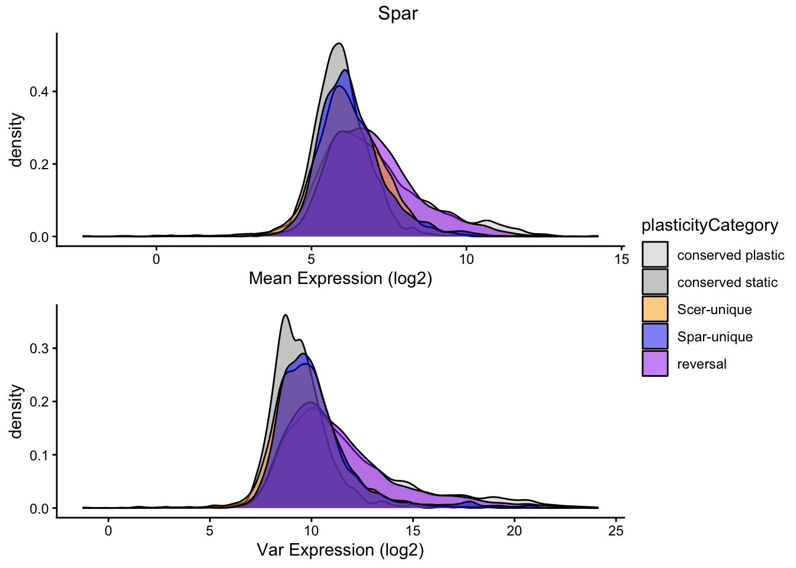
In the three examples above, we see that the regulons have strongly conserved plasticity in their home environment and tend to have more divergent plasticity in alternative environments. How common is this?
# each row is one regulatory interaction between one target and one regulator
plotdf <- purrr::map2(names(regmats), regmats, \(nm, mat) {
taget_names_diverged <- finaldf$gene_name[finaldf$experiment == nm & finaldf$plasticity == "diverged"]
taget_names_conserved <- finaldf$gene_name[finaldf$experiment == nm & finaldf$plasticity == "conserved"]
bind_rows(x = tibble(experiment = nm,
plasticity = "conserved",
nGenes = length(taget_names_conserved),
nInteractions = sum(mat[,colnames(mat) %in% taget_names_conserved])),
y = tibble(experiment = nm,
plasticity = "diverged",
nGenes = length(taget_names_diverged),
nInteractions = sum(mat[,colnames(mat) %in% taget_names_diverged])))
}) |> purrr::reduce(.f = bind_rows)
plotlist <- vector(mode = "list", length = length(ExperimentNames))
names(plotlist) <- ExperimentNames
for (e in ExperimentNames) {
plotdf_e <- plotdf |> filter(experiment == e)
fisher_mat <- plotdf_e |>
dplyr::select(nGenes, nInteractions) |> as.matrix()
rownames(fisher_mat) <- plotdf_e$plasticity
fisher_test <- fisher_mat |> fisher.test()
fisher_odds <- fisher_test$estimate
fisher_pvalue <- fisher_test$p.value
knitr::kable(fisher_mat, row.names = TRUE,
caption = paste0("Experiment = ", e,
"Fisher odds ratio = ", fisher_odds,
"p-value = ", fisher_pvalue)) |> print()
plotdf_e <- pivot_longer(plotdf_e, cols = c("nGenes", "nInteractions"))
plotlist[[e]] <- ggplot(plotdf_e, aes(x = name, y = plasticity)) +
geom_label(aes(label = value), size = 5) +
geom_vline(xintercept = 1.5) +
geom_hline(yintercept = 1.5) +
theme_classic() +
xlab("") +
ggtitle(paste0(LongExperimentNames[ExperimentNames == e],
"\nFisher odds ratio = ", round(fisher_odds, digits = 2),
"\np-value = ", formatC(fisher_pvalue))) +
theme(plot.title = element_text(size = 8))
}##
##
## Table: Experiment = HAP4Fisher odds ratio = 0.685568965065415p-value = 2.38807644160337e-08
##
## | | nGenes| nInteractions|
## |:---------|------:|-------------:|
## |conserved | 2831| 1053|
## |diverged | 1455| 371|
##
##
## Table: Experiment = CCFisher odds ratio = 0.752793002139748p-value = 5.4880661472393e-06
##
## | | nGenes| nInteractions|
## |:---------|------:|-------------:|
## |conserved | 2186| 911|
## |diverged | 1766| 554|
##
##
## Table: Experiment = LowNFisher odds ratio = 0.673521941002142p-value = 2.61341108505615e-07
##
## | | nGenes| nInteractions|
## |:---------|------:|-------------:|
## |conserved | 3107| 905|
## |diverged | 1305| 256|
##
##
## Table: Experiment = LowPiFisher odds ratio = 0.151247939518753p-value = 0.000212875135572081
##
## | | nGenes| nInteractions|
## |:---------|------:|-------------:|
## |conserved | 2638| 30|
## |diverged | 1745| 3|
##
##
## Table: Experiment = HeatFisher odds ratio = 0.4166811219463p-value = 1.38961917215029e-16
##
## | | nGenes| nInteractions|
## |:---------|------:|-------------:|
## |conserved | 2429| 378|
## |diverged | 1743| 113|
##
##
## Table: Experiment = ColdFisher odds ratio = 0.845499633453142p-value = 1
##
## | | nGenes| nInteractions|
## |:---------|------:|-------------:|
## |conserved | 2265| 3|
## |diverged | 1786| 2|2 x 2 fisher matrices for paper figure:
ggarrange(plotlist = plotlist, nrow = 2, ncol = 3)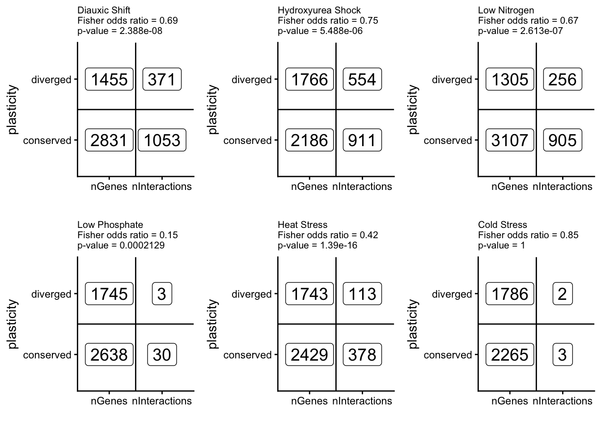
pdf(file = paste0("paper_figures/Yeastract/fisher.pdf"),
width = 7, height = 4)
ggarrange(plotlist = plotlist, nrow = 2, ncol = 3)
dev.off()## quartz_off_screen
## 2Bootstrapping of every non-YPD regulator with 20+ targets
getNullPctDivPlast <- function(.environment, .size) {
stopifnot(.size > 0)
sampledf <- finaldf |> filter(experiment == .environment) |>
dplyr::slice_sample(n = .size, replace = FALSE)
nDivPlast <- sampledf |> filter(plasticity == "diverged") |>
nrow()
return(nDivPlast/.size)
}
# tests for getNullPctDivPlast
getNullPctDivPlast(.environment = "LowPi", .size = 24)## [1] 0.375bootstrapRegulon <- function(.environment, .size, .nIter) {
stopifnot(.size > 0 & .nIter > 0)
boostrap_sample <- purrr::map(c(1:.nIter), \(i) {
samp <- getNullPctDivPlast(.environment = .environment,
.size = .size)
}) |> unlist()
return(boostrap_sample)
}
# tests for bootstrapRegulon
test_observed_pct <- regdf |> filter(environment == "LowPi" &
regulator_common == "PHO4") |>
dplyr::select(target, environment) |> left_join(y = finaldf, by = c("target"="gene_name",
"environment"="experiment")) |>
summarise(n = n(),
n_div_plast = sum(plasticity == "diverged", na.rm = TRUE),
pct_div_plast = n_div_plast/n) |>
dplyr::select(pct_div_plast) |> pull()
test_sample <- bootstrapRegulon(.environment = "LowPi", .size = 25, .nIter = 100)
test_plotdf <- tibble(null_dist = test_sample)
ggplot(test_plotdf, aes(x = null_dist)) +
geom_histogram(binwidth = 0.05) +
theme_classic() +
geom_vline(xintercept = test_observed_pct, color = "red") +
xlab("Percent of regulon with diverged plasticity") +
ggtitle(paste("PHO4", LongExperimentNames[ExperimentNames == "LowPi"]))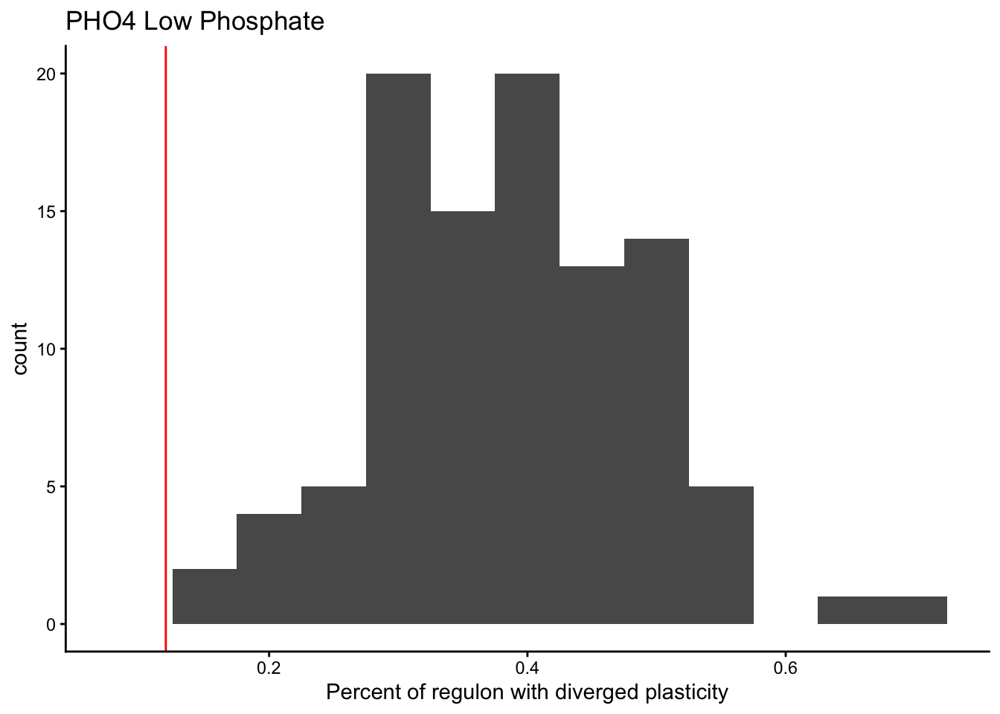
test_observed_pct < quantile(test_sample, probs = 0.05)## 5%
## TRUEPlotting for each environment-specific regulon:
griddf <- regdf |> filter(environment != "YPD") |>
group_by(regulator, regulator_common, environment) |>
summarise(size = n()) |>
filter(size >= 20) |>
select(regulator, regulator_common, environment)## `summarise()` has grouped output by 'regulator', 'regulator_common'. You can override using the
## `.groups` argument.# bootstrapping and generating plots
nIter <- 1000
plotlist <- vector(mode = "list", length = nrow(griddf))
siglist <- vector(mode = "list", length = nrow(griddf))
names(plotlist) <- paste(griddf$regulator_common, griddf$environment, sep = "_")
for (i in 1:nrow(griddf)) {
cat(i, "/", nrow(griddf), "\n")
test_environment <- griddf$environment[i]
test_regulator_common <- griddf$regulator_common[i]
test_observed_df <- regdf |> filter(environment == test_environment &
regulator_common == test_regulator_common)
test_n <- nrow(test_observed_df)
test_observed_pct <- test_observed_df |>
dplyr::select(target, environment) |>
left_join(y = finaldf, by = c("target"="gene_name",
"environment"="experiment")) |>
summarise(n_div_plast = sum(plasticity == "diverged", na.rm = TRUE),
pct_div_plast = n_div_plast/test_n) |>
dplyr::select(pct_div_plast) |> pull()
test_sample <- bootstrapRegulon(.environment = test_environment,
.size = test_n, .nIter = nIter)
test_plotdf <- tibble(null_dist = test_sample)
nm <- paste(test_regulator_common, test_environment, sep = "_")
nm_long <- paste(test_regulator_common,
LongExperimentNames[ExperimentNames == test_environment],
sep = " regulon\nin ")
siglist[[i]] <- test_observed_pct < quantile(test_sample, probs = 0.05)
plotlist[[nm]] <- ggplot(test_plotdf, aes(x = null_dist)) +
geom_histogram(binwidth = 0.05) +
theme_classic() +
geom_vline(xintercept = test_observed_pct, color = "red") +
xlab("Percent of regulon with\ndiverged plasticity") +
ggtitle(nm_long)
}## 1 / 50
## 2 / 50
## 3 / 50
## 4 / 50
## 5 / 50
## 6 / 50
## 7 / 50
## 8 / 50
## 9 / 50
## 10 / 50
## 11 / 50
## 12 / 50
## 13 / 50
## 14 / 50
## 15 / 50
## 16 / 50
## 17 / 50
## 18 / 50
## 19 / 50
## 20 / 50
## 21 / 50
## 22 / 50
## 23 / 50
## 24 / 50
## 25 / 50
## 26 / 50
## 27 / 50
## 28 / 50
## 29 / 50
## 30 / 50
## 31 / 50
## 32 / 50
## 33 / 50
## 34 / 50
## 35 / 50
## 36 / 50
## 37 / 50
## 38 / 50
## 39 / 50
## 40 / 50
## 41 / 50
## 42 / 50
## 43 / 50
## 44 / 50
## 45 / 50
## 46 / 50
## 47 / 50
## 48 / 50
## 49 / 50
## 50 / 50Plotting for figure:
# # set new binwidth, if desired
# plotlist <- purrr::map(plotlist, \(plt) {
# plt + geom_histogram(binwidth = 0.05)
# })
cat("number of regulons outside of boostrap range with 95% confidence:",
sum(unlist(siglist)), "out of", length(siglist), "total regulons\n")## number of regulons outside of boostrap range with 95% confidence: 33 out of 50 total regulonsggarrange(plotlist = sample(plotlist, size = 10), nrow = 2, ncol = 5)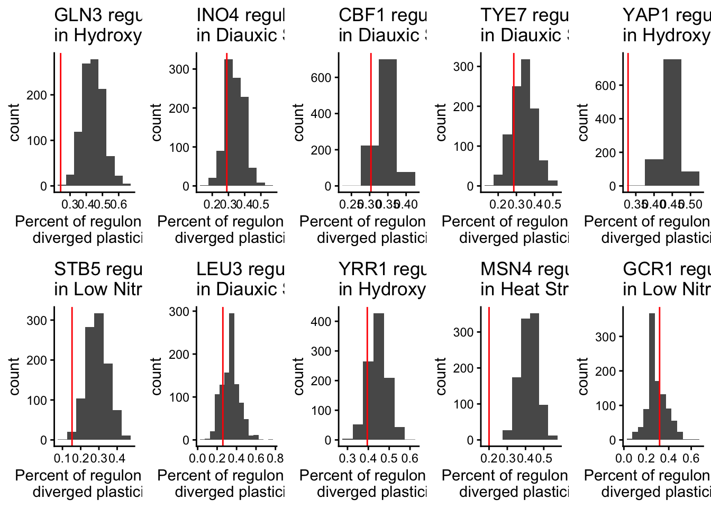
p <- ggarrange(plotlist = plotlist, nrow = 13, ncol = 4)
pdf("paper_figures/Supplement/bootstrap.pdf",
width = 10, height = 30)
annotate_figure(p, top = paste0("number of boostrap samples = ", nIter))
dev.off()## quartz_off_screen
## 2plotdf <- purrr::map2(names(regmats), regmats, \(nm, mat) {
tibble(target_name = colnames(mat),
experiment = nm,
nRegulators = colSums(mat))
}) |> purrr::reduce(.f = bind_rows) |>
right_join(y = finaldf, by = c("target_name"="gene_name",
"experiment")) |>
drop_na()
plot_table <- plotdf |> filter(nRegulators > 0) |> group_by(experiment, nRegulators) |>
summarise(n = n())## `summarise()` has grouped output by 'experiment'. You can override using the `.groups` argument.# plotdf_downsampled <- plotdf |> group_by(experiment, plasticity) |>
# slice_sample(n = min(plot_table$n))
p <- ggplot(filter(plotdf, nRegulators > 0), aes(x = nRegulators)) +
# geom_density(aes(fill = plasticity, y = after_stat(count)),
# alpha = 0.25, bw = 1) +
geom_histogram(aes(fill = plasticity), stat = "count", position = "dodge") +
facet_wrap(~factor(experiment,
levels = ExperimentNames,
labels = c("Diauxic Shift ", "HU Shock", "Low N", "Low Pi", "Heat", "Cold")),
nrow = 1, ncol = 6) +
theme_classic() +
theme(legend.position = "none") +
xlab("number of regulators per target gene") +
ylab("number of target genes") +
geom_text(data = filter(plot_table, n <= 5),
aes(label = n, x = nRegulators, y = 30),
size = 2, position = "dodge") +
scale_x_continuous(breaks = c(1:7)) +
scale_fill_discrete(limits = c("conserved", "diverged"),
type = c(colordf$type[colordf$limits == "conserved level and plasticity"],
colordf$type[colordf$limits == "diverged level and plasticity"]))## Warning in geom_histogram(aes(fill = plasticity), stat = "count", position = "dodge"): Ignoring
## unknown parameters: `binwidth` and `bins`p## Warning: Width not defined
## ℹ Set with `position_dodge(width = ...)`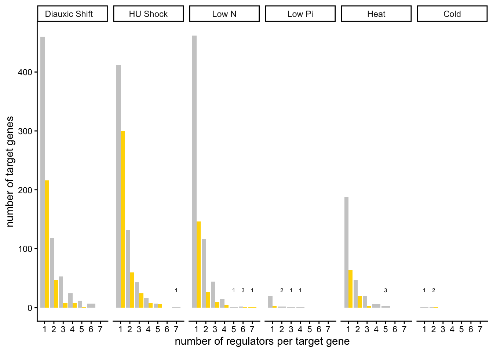
pdf for figure:
pdf("paper_figures/Yeastract/histogram.pdf",
width = 7, height = 2)
p## Warning: Width not defined
## ℹ Set with `position_dodge(width = ...)`dev.off()## quartz_off_screen
## 2p <- ggplot(filter(plotdf, nRegulators > 0),
aes(x = nRegulators)) +
geom_histogram(aes(fill = plasticity),
position = position_dodge(width = 0.5), stat="count") +
theme_classic() +
geom_label(stat = "count", aes(label=..count.., group = plasticity),
position = position_dodge(width = 0.5), label.size = NA,
alpha = 0, vjust = -0.25) +
xlab("number of regulators per target gene") +
scale_x_continuous(breaks = c(0:7)) +
scale_fill_discrete(limits = c("conserved", "diverged"),
type = c(colordf$type[colordf$limits == "conserved level and plasticity"],
colordf$type[colordf$limits == "diverged level and plasticity"])) +
ylim(c(0, 1560))## Warning in geom_histogram(aes(fill = plasticity), position = position_dodge(width = 0.5), :
## Ignoring unknown parameters: `binwidth` and `bins`p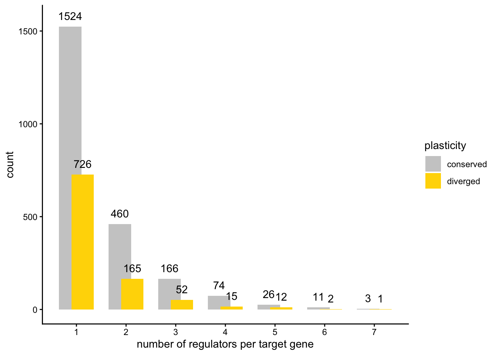
pdf("paper_figures/Yeastract/histogram_allEnv.pdf",
width = 3, height = 2)
p + theme(legend.position = "none")
dev.off()## quartz_off_screen
## 2plotdf <- tfdf |> dplyr::rename(c("home"="experiment", "tf"="gene_name"))
# dataframe of fraction conserved plasticity in each environment (same starting code as from regulon-pct-conserved-plasticity)
consplastdf <- purrr::map2(plotdf$tf, plotdf$home, \(tf, h) {
home_mat <- regmats[[h]]
h_idxs <- finaldf |> filter(experiment == h) |>
dplyr::select(gene_name) |> pull()
regulon_idxs <- intersect(colnames(home_mat)[home_mat[tf,] > 0], h_idxs)
outdf <- purrr::map(ExperimentNames, \(e) {
e_plast_genes <- finaldf |>
filter(experiment == e & plasticity == "conserved") |>
dplyr::select(gene_name) |> pull()
e_genedf <- tibble(tf = tf,
home = h,
experiment = e,
n = length(regulon_idxs),
nConsPlast = sum(regulon_idxs %in% e_plast_genes))
return(e_genedf)
}) |> purrr::reduce(.f = bind_rows)
return(outdf)
}) |> purrr::reduce(.f = bind_rows) |>
mutate(pct_cons_plast = nConsPlast/n) |>
dplyr::select(tf, home, experiment, pct_cons_plast) |>
pivot_wider(id_cols = c("tf", "home"),
names_from = "experiment",
values_from = "pct_cons_plast",
names_prefix = "percent_conserved_plasticity_")
suppTable3 <- tfdf |> dplyr::rename(c("home"="experiment", "tf"="gene_name",
"regulon_size"="out_degree_e",
"log2foldChange_parents"="effect_size_species",
"log2foldChange_hybrid"="effect_size_allele",
"padj_parents"="padj_species",
"padj_hybrid"="padj_allele")) |>
left_join(y = dplyr::select(yeastract_lookup,
common, systematic),
by = c("tf"="systematic")) |>
dplyr::select(home, tf, common, regulon_size,
log2foldChange_parents,
log2foldChange_hybrid,
padj_parents, padj_hybrid, plasticity,
cor_parents, cor_hybrid, cor_scer, cor_spar) |>
left_join(y = consplastdf, by = c("tf", "home"))Writing supp table to csv:
# write_csv(suppTable3, file = "data_files/Supplementary_Table3.csv",
# col_names = TRUE)plotdf <- regdf |> filter(environment != "YPD") |>
left_join(dplyr::select(finaldf, gene_name, experiment, plasticity),
by = c("target"="gene_name",
"environment"="experiment")) |>
group_by(regulator_common, regulator) |>
summarise(nTargets = n(),
nDivPlast = sum(plasticity == "diverged", na.rm = TRUE)) |>
filter(nTargets >= 20) |>
mutate(pctDivPlast = nDivPlast/nTargets) ## `summarise()` has grouped output by 'regulator_common'. You can override using the `.groups`
## argument.plotdf |>
arrange(desc(pctDivPlast))## # A tibble: 41 × 5
## # Groups: regulator_common [41]
## regulator_common regulator nTargets nDivPlast pctDivPlast
## <chr> <chr> <int> <int> <dbl>
## 1 RLM1 YPL089C 20 9 0.45
## 2 ABF1 YKL112W 24 9 0.375
## 3 PDR3 YBL005W 48 18 0.375
## 4 IXR1 YKL032C 21 7 0.333
## 5 YAP1 YML007W 514 169 0.329
## 6 SWI4 YER111C 46 15 0.326
## 7 YRR1 YOR162C 184 59 0.321
## 8 RPN4 YDL020C 214 68 0.318
## 9 PDR1 YGL013C 276 83 0.301
## 10 TYE7 YOR344C 77 22 0.286
## # ℹ 31 more rowsdiv30regulators <- plotdf |> filter(pctDivPlast > 0.3) |>
dplyr::select(regulator) |> pull()## Adding missing grouping variables: `regulator_common`p <- ggplot(plotdf, aes(x = nTargets, y = pctDivPlast)) +
geom_point(alpha = 0.5, aes(color = pctDivPlast > 0.3)) +
geom_text(data = filter(plotdf, pctDivPlast > 0.3),
aes(label = regulator_common, color = pctDivPlast > 0.3),
check_overlap = FALSE, position = position_jitter(width = 0, height = 0.03,
seed = 4),
size = 3) +
geom_text(data = filter(plotdf, pctDivPlast <= 0.3),
aes(label = regulator_common, color = pctDivPlast > 0.3),
check_overlap = TRUE, nudge_x = 0, nudge_y = 0.02, size = 3.5) +
geom_hline(yintercept = 0.3, alpha = 0.5) +
scale_color_manual(values = c("TRUE"="red", "FALSE"="black")) +
theme_classic() +
theme(legend.position = "none") +
ylab("percent") +
ggtitle("percent of regulatory targets with diverged plasticity")
p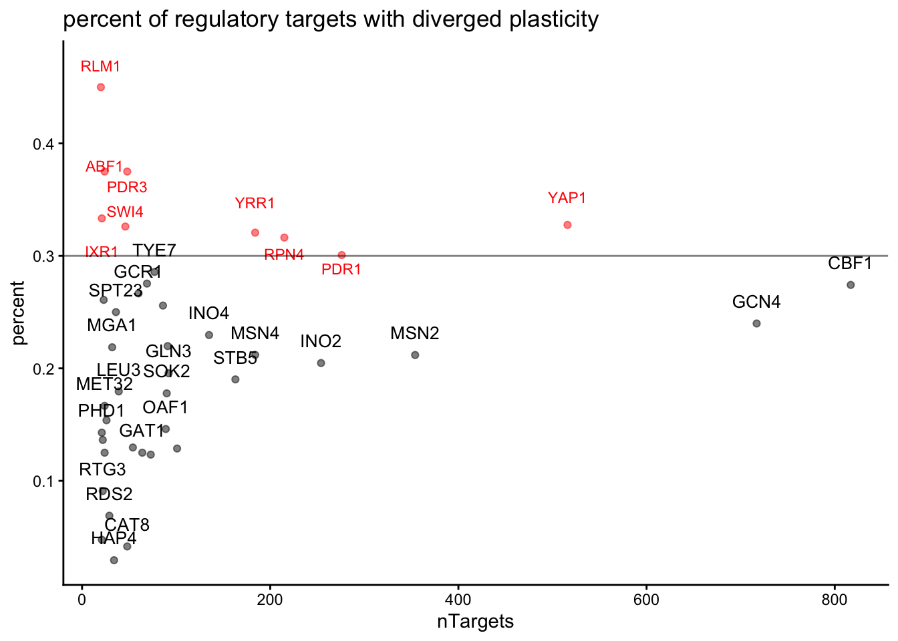
pdf for figure:
pdf("paper_figures/Yeastract/pctDivergedPlasticityPerTF.pdf",
width = 12, height = 3)
p
dev.off()## quartz_off_screen
## 2Any cis-diverging regulators with more than 30% diverged targets?
dplyr::select(finaldf, gene_name, experiment,
cor_scer, cor_spar, cor_hybrid,
effect_size_allele, padj_allele) |>
filter(gene_name %in% div30regulators) |>
group_by(gene_name) |>
summarise(nEnvLevDiv= sum(padj_allele < 0.05),
levDir = mean(effect_size_allele)) |>
dplyr::arrange(desc(nEnvLevDiv)) |>
left_join(yeastract_lookup, by = c("gene_name"="systematic"))## # A tibble: 8 × 6
## gene_name nEnvLevDiv levDir common_protein common description
## <chr> <int> <dbl> <chr> <chr> <chr>
## 1 YDL020C 5 -0.657 Rpn4p RPN4 Transcription factor that stimulates expressi…
## 2 YBL005W 3 -1.25 Pdr3p PDR3 Transcriptional activator of the pleiotropic …
## 3 YGL013C 3 -0.428 Pdr1p PDR1 Transcription factor that regulates the pleio…
## 4 YML007W 3 -0.571 Yap1p YAP1 Basic leucine zipper (bZIP) transcription fac…
## 5 YKL032C 2 0.105 Ixr1p IXR1 Transcriptional repressor that regulates hypo…
## 6 YKL112W 2 -0.400 Abf1p ABF1 DNA binding protein with possible chromatin-r…
## 7 YOR162C 0 -0.499 Yrr1p YRR1 Zn2-Cys6 zinc-finger transcription factor act…
## 8 YPL089C 0 -0.161 Rlm1p RLM1 MADS-box transcription factor component of th…plotEnvironments("YFR034C", .quartet = TRUE)## `summarise()` has grouped output by 'group_id', 'experiment'. You can override using the
## `.groups` argument.## Warning: Removed 60 rows containing missing values or values outside the scale range
## (`geom_ribbon()`).## Warning: Removed 32 rows containing missing values or values outside the scale range
## (`geom_ribbon()`).## Warning: Removed 12 rows containing missing values or values outside the scale range
## (`geom_ribbon()`).## Warning: Removed 110 rows containing missing values or values outside the scale range
## (`geom_ribbon()`).## Warning: Removed 16 rows containing missing values or values outside the scale range (`geom_ribbon()`).
## Removed 16 rows containing missing values or values outside the scale range (`geom_ribbon()`).## Warning: Removed 60 rows containing missing values or values outside the scale range
## (`geom_ribbon()`).## Warning: Removed 32 rows containing missing values or values outside the scale range
## (`geom_ribbon()`).## Warning: Removed 12 rows containing missing values or values outside the scale range
## (`geom_ribbon()`).## Warning: Removed 110 rows containing missing values or values outside the scale range
## (`geom_ribbon()`).## Warning: Removed 16 rows containing missing values or values outside the scale range (`geom_ribbon()`).
## Removed 16 rows containing missing values or values outside the scale range (`geom_ribbon()`).plotEnvironments("YOR162C", .quartet = TRUE)## `summarise()` has grouped output by 'group_id', 'experiment'. You can override using the
## `.groups` argument.## Warning: Removed 60 rows containing missing values or values outside the scale range
## (`geom_ribbon()`).## Warning: Removed 32 rows containing missing values or values outside the scale range
## (`geom_ribbon()`).## Warning: Removed 12 rows containing missing values or values outside the scale range
## (`geom_ribbon()`).## Warning: Removed 110 rows containing missing values or values outside the scale range
## (`geom_ribbon()`).## Warning: Removed 16 rows containing missing values or values outside the scale range (`geom_ribbon()`).
## Removed 16 rows containing missing values or values outside the scale range (`geom_ribbon()`).## Warning: Removed 60 rows containing missing values or values outside the scale range
## (`geom_ribbon()`).## Warning: Removed 32 rows containing missing values or values outside the scale range
## (`geom_ribbon()`).## Warning: Removed 12 rows containing missing values or values outside the scale range
## (`geom_ribbon()`).## Warning: Removed 110 rows containing missing values or values outside the scale range
## (`geom_ribbon()`).## Warning: Removed 16 rows containing missing values or values outside the scale range (`geom_ribbon()`).
## Removed 16 rows containing missing values or values outside the scale range (`geom_ribbon()`).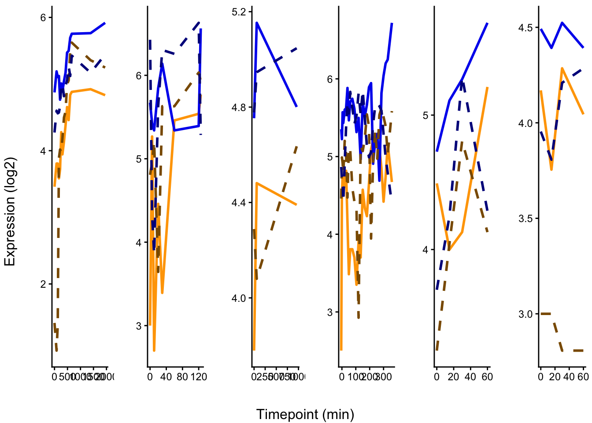
Subset of regdf only including regulons with > 30% diverged plasticity genes, for GO analysis:
GOdf <- regdf |> filter(regulator %in% div30regulators & environment != "YPD") |>
arrange(regulator_common)
GOdf|> dplyr::select(regulator_common, environment) |> table()## environment
## regulator_common CC HAP4 Heat
## ABF1 0 0 24
## IXR1 21 0 0
## PDR1 276 0 0
## PDR3 48 0 0
## RLM1 10 0 10
## RPN4 214 0 0
## SWI4 43 0 3
## YAP1 511 1 2
## YRR1 119 65 0# writing to RData file (we'll write it to a csv for Supp materials in GO script)
save(GOdf, file = "data_files/GOinput.RData")
# conserved regulators
GOdf_conserved <- regdf |> filter(!(regulator %in% div30regulators) & environment != "YPD") |>
arrange(regulator_common)
GOdf_conserved |> dplyr::select(regulator_common, environment) |> table()## environment
## regulator_common CC Cold HAP4 Heat LowN LowPi
## ADR1 1 0 1 0 0 0
## AFT1 19 0 0 0 0 0
## AFT2 4 0 0 0 0 0
## ARG80 1 0 0 0 1 0
## ARG81 1 0 0 0 1 0
## ARO80 3 0 0 2 0 0
## ARR1 3 0 0 0 0 0
## CAD1 6 0 0 0 0 0
## CAT8 0 0 33 0 15 0
## CBF1 1 0 415 0 397 2
## CIN5 13 0 0 0 0 0
## CRZ1 15 0 0 0 0 0
## CST6 0 0 19 0 0 0
## CYC8 0 0 1 0 0 0
## DAL80 0 0 1 0 0 0
## DAL81 0 0 6 0 0 0
## ECM22 3 0 0 0 0 0
## ERT1 0 0 5 0 1 0
## FHL1 0 0 0 2 0 0
## FKH1 3 0 0 0 0 0
## FKH2 3 0 0 1 0 0
## GAT1 3 0 0 0 61 0
## GCN4 241 0 438 1 36 0
## GCR1 0 0 38 0 22 0
## GCR2 0 0 15 0 6 0
## GIS1 6 0 0 1 1 0
## GLN3 62 0 17 0 13 0
## HAA1 1 0 0 0 0 0
## HAC1 10 0 0 0 0 0
## HAP4 0 0 30 4 0 0
## HOT1 0 0 0 2 0 0
## HSF1 4 0 1 96 0 0
## IFH1 4 0 0 0 1 0
## IME1 0 0 1 0 0 0
## INO4 0 0 69 0 62 2
## LEU3 0 0 27 0 12 0
## MAC1 5 0 0 0 0 0
## MBP1 15 0 0 0 0 0
## MCM1 2 0 0 2 1 0
## MET32 23 0 0 1 0 0
## MET4 23 0 0 0 0 0
## MGA1 0 0 0 0 32 0
## MGA2 1 0 0 1 0 0
## MIG1 0 0 2 10 0 0
## MIG2 0 0 1 0 0 0
## MSN1 1 0 0 1 0 0
## MSN2 48 3 40 176 84 1
## MSN4 12 2 0 115 53 0
## MSS11 0 0 0 0 8 0
## NRG1 1 0 0 0 0 0
## OAF1 0 0 43 0 46 0
## PHD1 0 0 0 0 22 0
## PHO2 0 0 0 0 0 2
## PHO4 1 0 0 0 0 25
## PIP2 0 0 28 0 26 0
## RAP1 0 0 0 92 0 0
## RDS2 0 0 25 0 4 0
## REB1 0 0 0 1 0 0
## RFX1 1 0 0 0 0 0
## RIM101 1 0 0 0 0 0
## ROX1 2 0 4 0 0 0
## RPH1 12 0 0 0 0 0
## RTG1 1 0 7 0 2 1
## RTG2 0 0 0 0 1 0
## RTG3 0 0 18 0 3 1
## SFL1 0 0 0 0 1 0
## SFP1 0 0 0 0 73 0
## SIP4 0 0 10 0 0 0
## SKN7 0 0 0 2 0 0
## SKO1 1 0 0 0 0 0
## SMP1 1 0 0 0 0 0
## SOK2 0 0 0 1 90 0
## SPT23 1 0 0 35 0 0
## STB5 0 0 102 0 59 0
## STE12 6 0 0 0 63 0
## SUT1 0 0 16 0 6 0
## TEC1 1 0 0 0 85 0
## TUP1 0 0 1 0 0 0
## TYE7 0 0 63 0 14 0
## UME6 1 0 21 0 3 0
## UPC2 1 0 0 0 0 0
## WAR1 3 0 0 0 0 0
## XBP1 0 0 0 0 1 0
## YAP5 5 0 0 0 0 0
## YOX1 1 0 0 0 0 0save(GOdf_conserved, file = "data_files/GOinputConserved.RData")YRR1 has strongly divergent regulons, it controls more genes in CC than HAP4, but looking at HAP4 first
### genes associated with transport in YRR1 regulon in Diauxic Shift:
# YRR1, PDR1 and 3, YAP1, and IXR1 all regulate FLR1, YBR008C
p_FLR1 <- plotGenes("YBR008C", .quartet = TRUE, .experiment_name = "HAP4",
.plot_titles = c("FLR1, regulated by YRR1 \n(GO: transport)\n in Diauxic Shift"))## `summarise()` has grouped output by 'group_id', 'experiment'. You can override using the
## `.groups` argument.# YOR1 has reversed plasticity in hybrid, (low-varying in Spar parent):
p_YOR1 <- plotGenes("YGR281W", .quartet = TRUE, .experiment_name = "HAP4",
.plot_titles = c("YOR1, regulated by YRR1 \n(GO: transport)\n in Diauxic Shift"))## `summarise()` has grouped output by 'group_id', 'experiment'. You can override using the
## `.groups` argument.# SEC28 and PTR2 decrease after Diauxic shift in Scer, PTR2 has divergent plasticity in cis!
p_SEC28 <- plotGenes("YIL076W", .quartet = TRUE, .experiment_name = "HAP4",
.plot_titles = c("SEC28, regulated by YRR1 \n(GO: transport)\n in Diauxic Shift"))## `summarise()` has grouped output by 'group_id', 'experiment'. You can override using the
## `.groups` argument.p_PTR2 <- plotGenes("YKR093W", .quartet = TRUE, .experiment_name = "HAP4",
.plot_titles = c("PTR2, regulated by YRR1 \n(GO: transport)\n in Diauxic Shift"))## `summarise()` has grouped output by 'group_id', 'experiment'. You can override using the
## `.groups` argument.# TPO1, slightly more of a decrease in Spar, also seems to be plasticity divergence in cis
p_TPO1 <- plotGenes("YLL028W", .quartet = TRUE, .experiment_name = "HAP4",
.plot_titles = c("TPO1, regulated by YRR1 \n(GO: transport)\n in Diauxic Shift"))## `summarise()` has grouped output by 'group_id', 'experiment'. You can override using the
## `.groups` argument.# PDR12, similar to TPO1, but it starts from a higher level in Spar
p_PDR12 <- plotGenes("YPL058C", .quartet = TRUE, .experiment_name = "HAP4",
.plot_titles = c("PDR12, regulated by YRR1 \n(GO: transport)\n in Diauxic Shift"))## `summarise()` has grouped output by 'group_id', 'experiment'. You can override using the
## `.groups` argument.ggarrange(p_FLR1, p_YOR1, p_SEC28, p_PTR2, p_TPO1, p_PDR12,
nrow = 1, ncol = 6)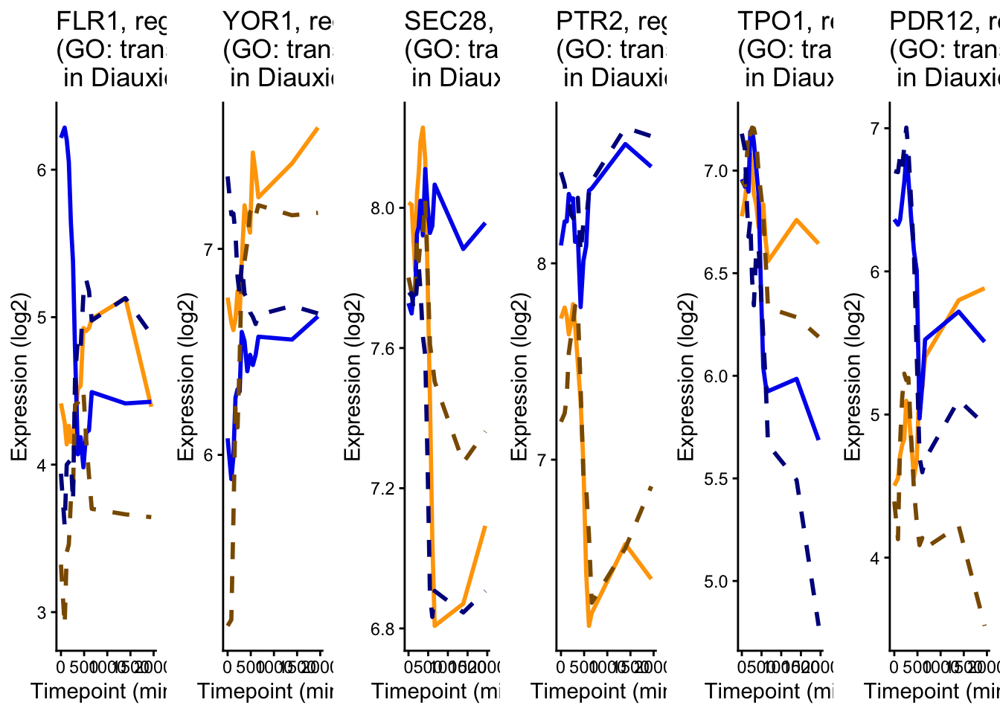
test_idxs <- regdf |> filter(regulator_common == "DAL80") |>
dplyr::select(regulator) |> pull() |> unique()
plotGenes(test_idxs, .experiment_name = "HAP4", .quartet = TRUE)## `summarise()` has grouped output by 'group_id', 'experiment'. You can override using the
## `.groups` argument.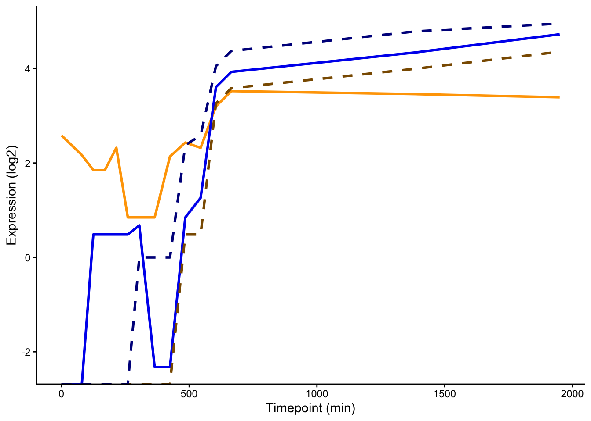
test_genes <- left_join(tibble(systematic = test_idxs),
y = dplyr::select(yeastract_lookup, systematic, common),
by = "systematic")
test_e <- "HAP4"
test_e_name <- LongExperimentNames[ExperimentNames == test_e]
plotlist = vector(mode = "list", length = length(test_idxs))
names(plotlist) <- test_genes$common
for (g in test_genes$common) {
test_idx <- filter(test_genes, common == g) |> dplyr::select(systematic) |> pull()
plotlist[[g]] <- plotGenes(test_idx,
.quartet = TRUE, .experiment_name = test_e,
.plot_titles = paste0(g, ", regulates PTR2\n in ", test_e_name))
}## `summarise()` has grouped output by 'group_id', 'experiment'. You can override using the
## `.groups` argument.ggarrange(plotlist = plotlist[1:10],
nrow = 2, ncol = ceiling(length(plotlist[1:10])/2))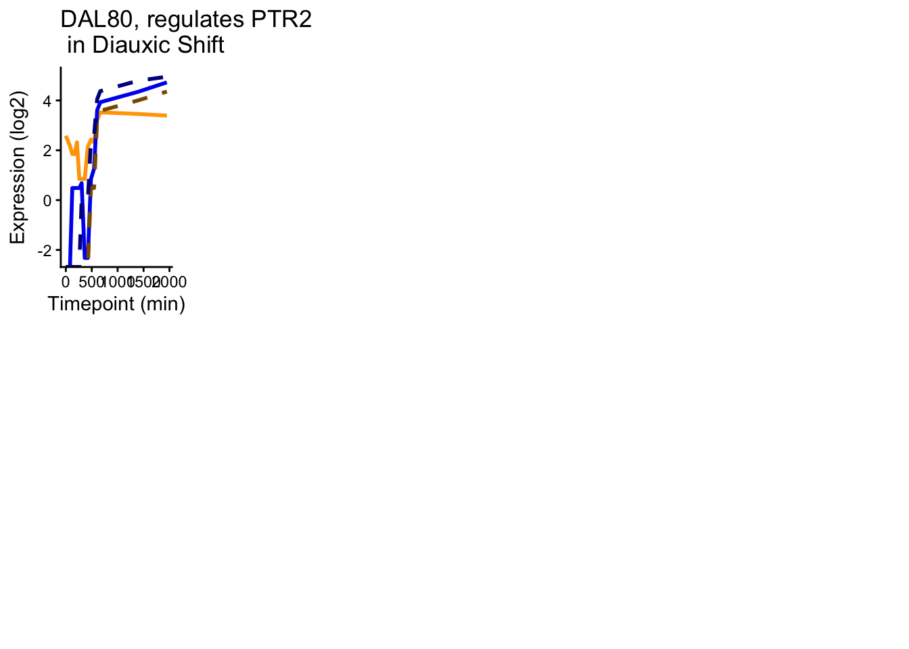
ggarrange(plotlist = plotlist[11:21],
nrow = 2, ncol = ceiling(length(plotlist[11:21])/2))### Ptr2 (YKR093W) comparative TFBS content
ptr2_tfbsdf <- readxl::read_xlsx("data_files/PTR2_intergenic_TFBS.xlsx",
col_names = TRUE)
plotdf <- ptr2_tfbsdf |> group_by(TF, Species) |>
mutate(TF = stringr::str_trim(TF, side = "right")) |>
tidyr::separate_rows(TF, convert = TRUE) |>
group_by(TF, Species) |>
summarise(n = n()) |>
pivot_wider(id_cols = "TF", names_from = "Species",
values_from = "n", values_fill = 0) |>
left_join(y = dplyr::select(yeastract_lookup, common_protein, common, systematic),
by = c("TF"="common_protein"))## `summarise()` has grouped output by 'TF'. You can override using the `.groups` argument.plotdf$conservation <- if_else(plotdf$Scer == 0, true = "Spar",
false = if_else(plotdf$Spar == 0,
true = "Scer",
false = "both"))
both_idxs <- plotdf |> filter(conservation == "both") |>
dplyr::select(systematic) |> pull() |>
intersect(y = unique(finaldf$gene_name))## Adding missing grouping variables: `TF`Scer_idxs <- plotdf |> filter(conservation == "Scer") |>
dplyr::select(systematic) |> pull() |>
intersect(y = unique(finaldf$gene_name))## Adding missing grouping variables: `TF`Spar_idxs <- plotdf |> filter(conservation == "Spar") |>
dplyr::select(systematic) |> pull() |>
intersect(y = unique(finaldf$gene_name))## Adding missing grouping variables: `TF`# TFs with TFBSs in both species
plotGenes(both_idxs, .experiment_name = "HAP4",
.plot_titles = c("TFs with binding sites in \nPTR2 intergenic in both species"), .quartet = TRUE)## `summarise()` has grouped output by 'group_id', 'experiment'. You can override using the
## `.groups` argument.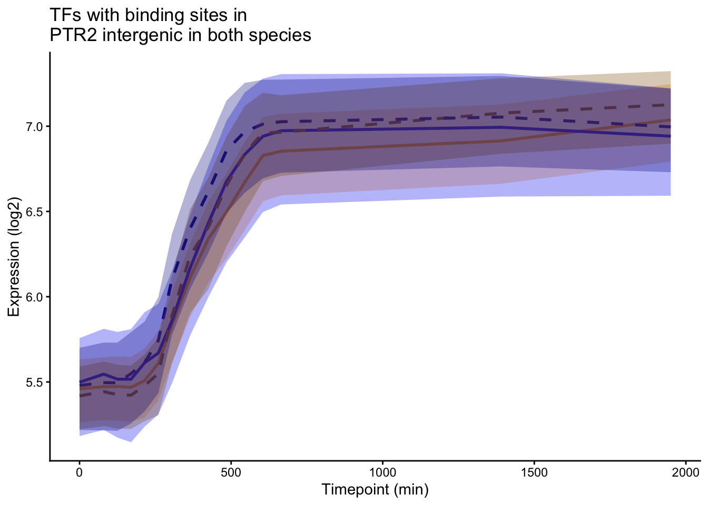
# Scer unique
plotlist <- vector(mode = "list", length = length(Scer_idxs))
names(plotlist) <- Scer_idxs
for (g in Scer_idxs) {
plotlist[[g]] <- plotGenes(g,
.quartet = TRUE, .experiment_name = "HAP4",
.plot_titles = unique(plotdf$common[plotdf$systematic == g]))
}## `summarise()` has grouped output by 'group_id', 'experiment'. You can override using the
## `.groups` argument.
## `summarise()` has grouped output by 'group_id', 'experiment'. You can override using the
## `.groups` argument.
## `summarise()` has grouped output by 'group_id', 'experiment'. You can override using the
## `.groups` argument.
## `summarise()` has grouped output by 'group_id', 'experiment'. You can override using the
## `.groups` argument.ggarrange(plotlist = plotlist,
nrow = 2, ncol = ceiling(length(plotlist)/2))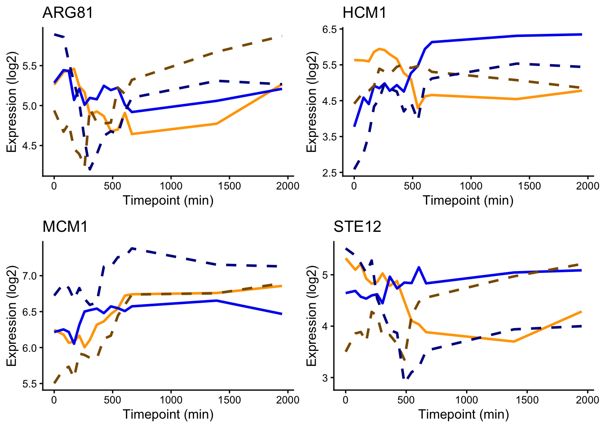
# Spar unique
plotlist <- vector(mode = "list", length = length(Spar_idxs))
names(plotlist) <- Spar_idxs
for (g in Spar_idxs) {
plotlist[[g]] <- plotGenes(g,
.quartet = TRUE, .experiment_name = "HAP4",
.plot_titles = unique(plotdf$common[plotdf$systematic == g]))
}## `summarise()` has grouped output by 'group_id', 'experiment'. You can override using the
## `.groups` argument.
## `summarise()` has grouped output by 'group_id', 'experiment'. You can override using the
## `.groups` argument.
## `summarise()` has grouped output by 'group_id', 'experiment'. You can override using the
## `.groups` argument.
## `summarise()` has grouped output by 'group_id', 'experiment'. You can override using the
## `.groups` argument.
## `summarise()` has grouped output by 'group_id', 'experiment'. You can override using the
## `.groups` argument.ggarrange(plotlist = plotlist,
nrow = 2, ncol = ceiling(length(plotlist)/2))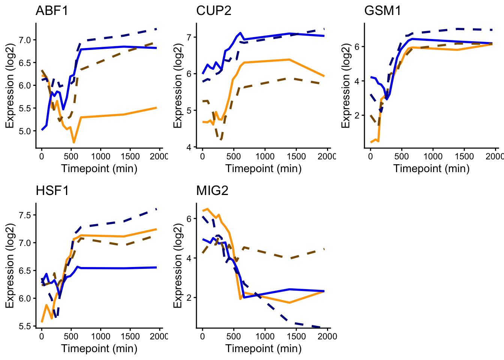
### conserved example regulon HSF1 Heat, protein foldingtest_idxs <- c("YAL005C", "YBL075C", "YBR072W", "YBR169C", "YDR214W", "YDR258C", "YER103W",
"YFL016C", "YGR142W", "YJR045C", "YLL024C", "YLL026W", "YLR216C", "YLR259C",
"YML130C", "YMR186W", "YNL007C", "YNL064C", "YNL281W", "YOR020C", "YOR027W",
"YPL106C", "YPL240C", "YPR158W")
test_genes <- left_join(tibble(systematic = test_idxs),
y = dplyr::select(yeastract_lookup, systematic, common),
by = "systematic")
test_tf <- "HSF1"
test_GO <- "GO: protein folding"
test_e <- "Heat"
test_e_name <- LongExperimentNames[ExperimentNames == test_e]
plotlist = vector(mode = "list", length = length(test_idxs))
names(plotlist) <- test_genes$common
for (g in test_genes$common) {
test_idx <- filter(test_genes, common == g) |> dplyr::select(systematic) |> pull()
plotlist[[g]] <- plotGenes(test_idx,
.quartet = TRUE, .experiment_name = test_e,
.plot_titles = paste0(g, ", regulated by ", test_tf," \n",
test_GO, "\n in ", test_e_name))
}## `summarise()` has grouped output by 'group_id', 'experiment'. You can override using the
## `.groups` argument.
## `summarise()` has grouped output by 'group_id', 'experiment'. You can override using the
## `.groups` argument.
## `summarise()` has grouped output by 'group_id', 'experiment'. You can override using the
## `.groups` argument.
## `summarise()` has grouped output by 'group_id', 'experiment'. You can override using the
## `.groups` argument.
## `summarise()` has grouped output by 'group_id', 'experiment'. You can override using the
## `.groups` argument.
## `summarise()` has grouped output by 'group_id', 'experiment'. You can override using the
## `.groups` argument.
## `summarise()` has grouped output by 'group_id', 'experiment'. You can override using the
## `.groups` argument.
## `summarise()` has grouped output by 'group_id', 'experiment'. You can override using the
## `.groups` argument.
## `summarise()` has grouped output by 'group_id', 'experiment'. You can override using the
## `.groups` argument.
## `summarise()` has grouped output by 'group_id', 'experiment'. You can override using the
## `.groups` argument.
## `summarise()` has grouped output by 'group_id', 'experiment'. You can override using the
## `.groups` argument.
## `summarise()` has grouped output by 'group_id', 'experiment'. You can override using the
## `.groups` argument.
## `summarise()` has grouped output by 'group_id', 'experiment'. You can override using the
## `.groups` argument.
## `summarise()` has grouped output by 'group_id', 'experiment'. You can override using the
## `.groups` argument.
## `summarise()` has grouped output by 'group_id', 'experiment'. You can override using the
## `.groups` argument.
## `summarise()` has grouped output by 'group_id', 'experiment'. You can override using the
## `.groups` argument.
## `summarise()` has grouped output by 'group_id', 'experiment'. You can override using the
## `.groups` argument.
## `summarise()` has grouped output by 'group_id', 'experiment'. You can override using the
## `.groups` argument.
## `summarise()` has grouped output by 'group_id', 'experiment'. You can override using the
## `.groups` argument.
## `summarise()` has grouped output by 'group_id', 'experiment'. You can override using the
## `.groups` argument.
## `summarise()` has grouped output by 'group_id', 'experiment'. You can override using the
## `.groups` argument.
## `summarise()` has grouped output by 'group_id', 'experiment'. You can override using the
## `.groups` argument.
## `summarise()` has grouped output by 'group_id', 'experiment'. You can override using the
## `.groups` argument.
## `summarise()` has grouped output by 'group_id', 'experiment'. You can override using the
## `.groups` argument.ggarrange(plotlist = plotlist[1:12],
nrow = 2, ncol = ceiling(length(plotlist[1:12])/2))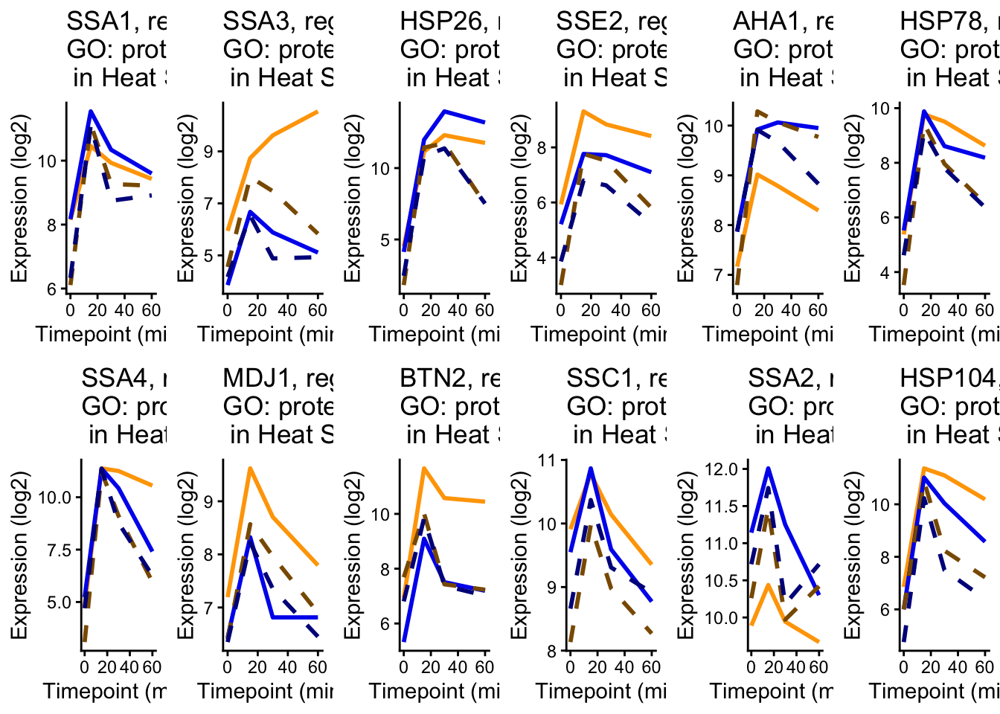
ggarrange(plotlist = plotlist[13:24],
nrow = 2, ncol = ceiling(length(plotlist[13:24])/2))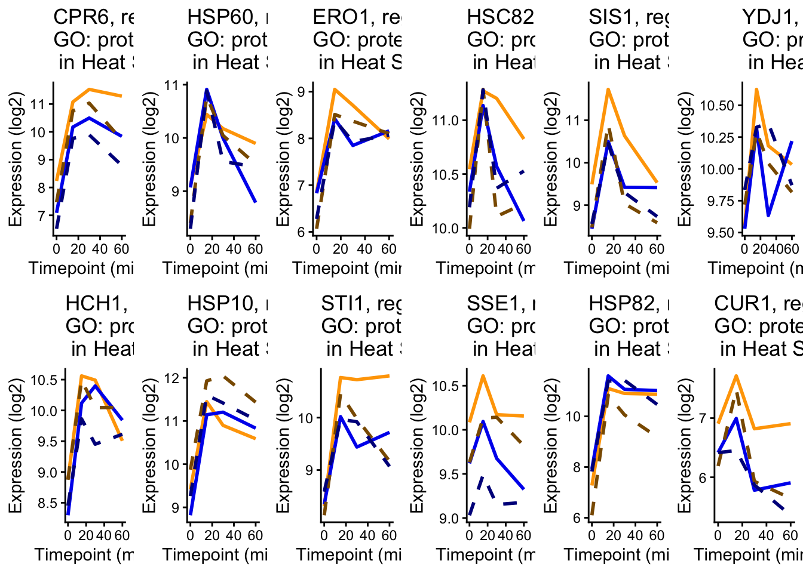
hsp60_tfbsdf <- readxl::read_xlsx("data_files/HSP60_intergenic_TFBS.xlsx",
col_names = TRUE)
plotdf <- hsp60_tfbsdf |> group_by(TF, Species) |>
mutate(TF = stringr::str_trim(TF, side = "right")) |>
tidyr::separate_rows(TF, convert = TRUE) |>
group_by(TF, Species) |>
summarise(n = n()) |>
pivot_wider(id_cols = "TF", names_from = "Species",
values_from = "n", values_fill = 0) |>
left_join(y = dplyr::select(yeastract_lookup, common_protein, common, systematic),
by = c("TF"="common_protein"))## `summarise()` has grouped output by 'TF'. You can override using the `.groups` argument.plotdf$conservation <- if_else(plotdf$Scer == 0, true = "Spar",
false = if_else(plotdf$Spar == 0,
true = "Scer",
false = "both"))
both_idxs <- plotdf |> filter(conservation == "both") |>
dplyr::select(systematic) |> pull() |>
intersect(y = unique(finaldf$gene_name))## Adding missing grouping variables: `TF`Scer_idxs <- plotdf |> filter(conservation == "Scer") |>
dplyr::select(systematic) |> pull() |>
intersect(y = unique(finaldf$gene_name))## Adding missing grouping variables: `TF`Spar_idxs <- plotdf |> filter(conservation == "Spar") |>
dplyr::select(systematic) |> pull() |>
intersect(y = unique(finaldf$gene_name))## Adding missing grouping variables: `TF`# TFs with TFBSs in both species
plotGenes(both_idxs, .experiment_name = "Heat",
.plot_titles = c("TFs with binding sites in \nPTR2 intergenic in both species"), .quartet = TRUE)## `summarise()` has grouped output by 'group_id', 'experiment'. You can override using the
## `.groups` argument.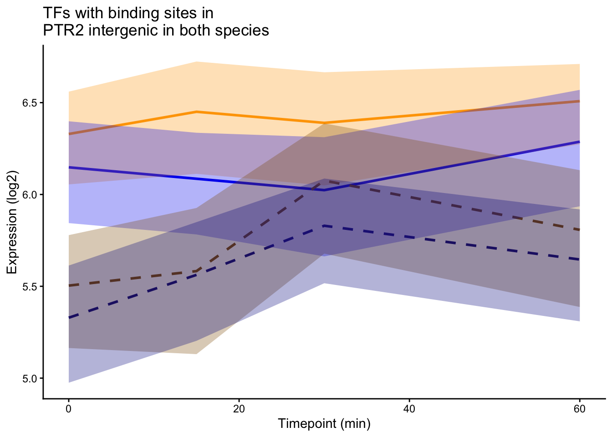
# Scer unique
plotlist <- vector(mode = "list", length = length(Scer_idxs))
names(plotlist) <- Scer_idxs
for (g in Scer_idxs) {
plotlist[[g]] <- plotGenes(g,
.quartet = TRUE, .experiment_name = "Heat",
.plot_titles = unique(plotdf$common[plotdf$systematic == g]))
}## `summarise()` has grouped output by 'group_id', 'experiment'. You can override using the
## `.groups` argument.
## `summarise()` has grouped output by 'group_id', 'experiment'. You can override using the
## `.groups` argument.
## `summarise()` has grouped output by 'group_id', 'experiment'. You can override using the
## `.groups` argument.
## `summarise()` has grouped output by 'group_id', 'experiment'. You can override using the
## `.groups` argument.
## `summarise()` has grouped output by 'group_id', 'experiment'. You can override using the
## `.groups` argument.
## `summarise()` has grouped output by 'group_id', 'experiment'. You can override using the
## `.groups` argument.ggarrange(plotlist = plotlist,
nrow = 2, ncol = ceiling(length(plotlist)/2))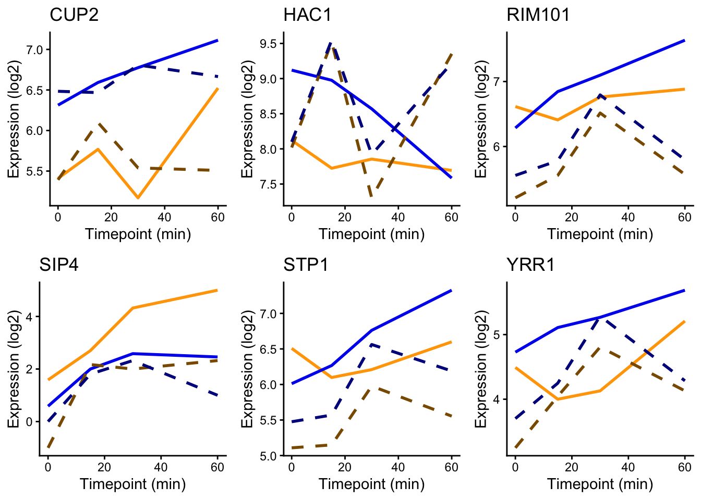
# Spar unique
plotlist <- vector(mode = "list", length = length(Spar_idxs))
names(plotlist) <- Spar_idxs
for (g in Spar_idxs) {
plotlist[[g]] <- plotGenes(g,
.quartet = TRUE, .experiment_name = "Heat",
.plot_titles = unique(plotdf$common[plotdf$systematic == g]))
}## `summarise()` has grouped output by 'group_id', 'experiment'. You can override using the
## `.groups` argument.
## `summarise()` has grouped output by 'group_id', 'experiment'. You can override using the
## `.groups` argument.
## `summarise()` has grouped output by 'group_id', 'experiment'. You can override using the
## `.groups` argument.
## `summarise()` has grouped output by 'group_id', 'experiment'. You can override using the
## `.groups` argument.
## `summarise()` has grouped output by 'group_id', 'experiment'. You can override using the
## `.groups` argument.
## `summarise()` has grouped output by 'group_id', 'experiment'. You can override using the
## `.groups` argument.
## `summarise()` has grouped output by 'group_id', 'experiment'. You can override using the
## `.groups` argument.
## `summarise()` has grouped output by 'group_id', 'experiment'. You can override using the
## `.groups` argument.
## `summarise()` has grouped output by 'group_id', 'experiment'. You can override using the
## `.groups` argument.
## `summarise()` has grouped output by 'group_id', 'experiment'. You can override using the
## `.groups` argument.
## `summarise()` has grouped output by 'group_id', 'experiment'. You can override using the
## `.groups` argument.
## `summarise()` has grouped output by 'group_id', 'experiment'. You can override using the
## `.groups` argument.
## `summarise()` has grouped output by 'group_id', 'experiment'. You can override using the
## `.groups` argument.
## `summarise()` has grouped output by 'group_id', 'experiment'. You can override using the
## `.groups` argument.ggarrange(plotlist = plotlist,
nrow = 2, ncol = ceiling(length(plotlist)/2))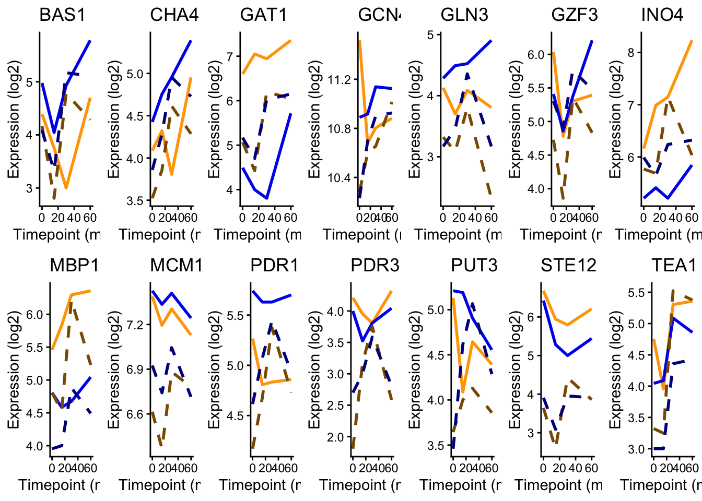
Conclusion: too much TFBS turnover to identify any causative changes in PTR2 cis region—HSP60 has conserved plasticity and has more differences in TFBS content between species than PTR2
# YRR1, 3 genes associated with plasma membrane organization in CC. All have the same pattern of HU-induced decrease in Spar (and in hybrid alleles):
plotGenes(c("YFL014W", "YMR251W-A", "YPR149W"), .experiment_name = "CC",
.plot_titles = c("HOR7, NCE102, and HSP12 \n(GO: plasma membrane organization)\n in HU Shock"), .quartet = TRUE)## `summarise()` has grouped output by 'group_id', 'experiment'. You can override using the
## `.groups` argument.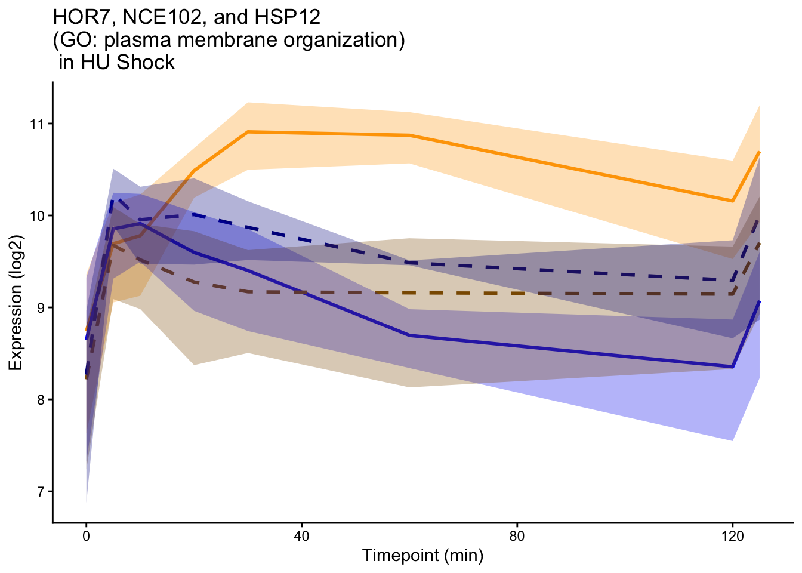
YRR1 also regulates some genes involved in generation of precursor metabolites and energy:
test_idxs <- c("YAL038W", "YFR033C", "YGL253W", "YJR048W",
"YMR145C", "YOR065W", "YPR191W")
test_genes <- left_join(tibble(systematic = test_idxs),
y = dplyr::select(yeastract_lookup, systematic, common),
by = "systematic")
test_tf <- "YRR1"
test_GO <- "GO: generation of precursor metabolites"
test_e <- "CC"
test_e_name <- LongExperimentNames[ExperimentNames == test_e]
plotlist = vector(mode = "list", length = length(test_idxs))
names(plotlist) <- test_genes$common
for (g in test_genes$common) {
test_idx <- filter(test_genes, common == g) |> dplyr::select(systematic) |> pull()
plotlist[[g]] <- plotGenes(test_idx,
.quartet = TRUE, .experiment_name = test_e,
.plot_titles = paste0(g, ", regulated by ", test_tf," \n",
test_GO, "\n in ", test_e_name))
}## `summarise()` has grouped output by 'group_id', 'experiment'. You can override using the
## `.groups` argument.
## `summarise()` has grouped output by 'group_id', 'experiment'. You can override using the
## `.groups` argument.
## `summarise()` has grouped output by 'group_id', 'experiment'. You can override using the
## `.groups` argument.
## `summarise()` has grouped output by 'group_id', 'experiment'. You can override using the
## `.groups` argument.
## `summarise()` has grouped output by 'group_id', 'experiment'. You can override using the
## `.groups` argument.
## `summarise()` has grouped output by 'group_id', 'experiment'. You can override using the
## `.groups` argument.
## `summarise()` has grouped output by 'group_id', 'experiment'. You can override using the
## `.groups` argument.ggarrange(plotlist = plotlist,
nrow = 2, ncol = ceiling(length(plotlist)/2))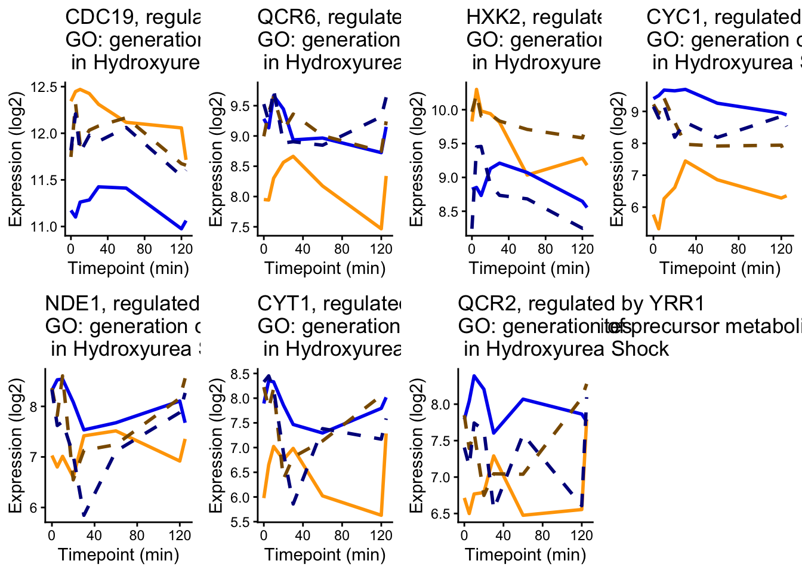
Conclusion: lots of trans-based level divergence in both directions, HXK2 seems to have up-Scer cis-based level divergence. Some mild plasticity divergence, especially RGL1, ENO2, AAP1, and SOL4, COX6, CYC1
YAP1 CC has the same generation of precursor metabolites and energy GO-term hit in CC:
test_idxs <- c("YAL038W", "YBL045C", "YBR010W", "YER067W", "YFR033C", "YGL253W",
"YGR248W", "YHR047C", "YHR051W", "YHR174W", "YJR048W", "YLR258W")
test_genes <- left_join(tibble(systematic = test_idxs),
y = dplyr::select(yeastract_lookup, systematic, common),
by = "systematic")
test_tf <- "YAP1"
test_GO <- "GO: generation of precursor metabolites"
test_e <- "CC"
test_e_name <- LongExperimentNames[ExperimentNames == test_e]
plotlist = vector(mode = "list", length = length(test_idxs))
names(plotlist) <- test_genes$common
for (g in test_genes$common) {
test_idx <- filter(test_genes, common == g) |> dplyr::select(systematic) |> pull()
plotlist[[g]] <- plotGenes(test_idx,
.quartet = TRUE, .experiment_name = test_e,
.plot_titles = paste0(g, ", regulated by ", test_tf," \n",
test_GO, "\n in ", test_e_name))
}## `summarise()` has grouped output by 'group_id', 'experiment'. You can override using the
## `.groups` argument.
## `summarise()` has grouped output by 'group_id', 'experiment'. You can override using the
## `.groups` argument.
## `summarise()` has grouped output by 'group_id', 'experiment'. You can override using the
## `.groups` argument.
## `summarise()` has grouped output by 'group_id', 'experiment'. You can override using the
## `.groups` argument.
## `summarise()` has grouped output by 'group_id', 'experiment'. You can override using the
## `.groups` argument.
## `summarise()` has grouped output by 'group_id', 'experiment'. You can override using the
## `.groups` argument.
## `summarise()` has grouped output by 'group_id', 'experiment'. You can override using the
## `.groups` argument.
## `summarise()` has grouped output by 'group_id', 'experiment'. You can override using the
## `.groups` argument.
## `summarise()` has grouped output by 'group_id', 'experiment'. You can override using the
## `.groups` argument.
## `summarise()` has grouped output by 'group_id', 'experiment'. You can override using the
## `.groups` argument.
## `summarise()` has grouped output by 'group_id', 'experiment'. You can override using the
## `.groups` argument.
## `summarise()` has grouped output by 'group_id', 'experiment'. You can override using the
## `.groups` argument.ggarrange(plotlist = plotlist,
nrow = 2, ncol = ceiling(length(plotlist)/2))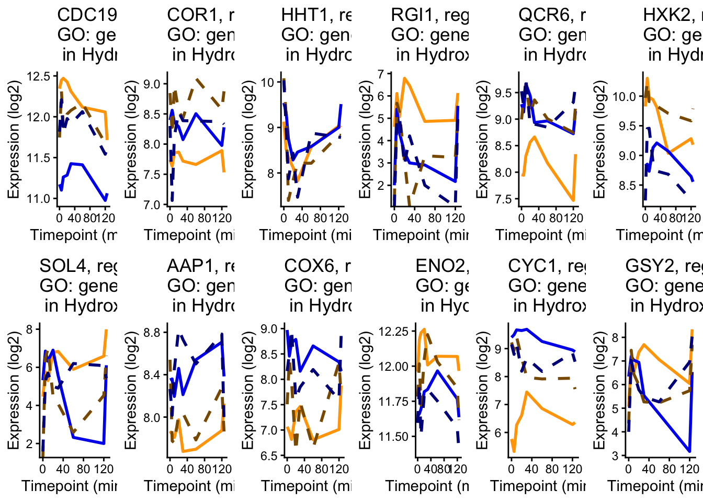
Conclusion: Similar to YRR1, the trans-based level divergence is the main story. In both YAP1 and YRR1, CYC1 only has plasticity in Scer, spikes early. Lupo et al. 2021 doesn’t mention this gene.
PDR1 Protein Folding
test_idxs <- c("YAL005C", "YCL045C", "YDR258C", "YLL024C", "YLL026W", "YPL106C",
"YAR002W")
test_genes <- left_join(tibble(systematic = test_idxs),
y = dplyr::select(yeastract_lookup, systematic, common),
by = "systematic")
test_tf <- "PDR1"
test_GO <- "GO: protein folding/heat response"
test_e <- "CC"
test_e_name <- LongExperimentNames[ExperimentNames == test_e]
plotlist = vector(mode = "list", length = length(test_idxs))
names(plotlist) <- test_genes$common
for (g in test_genes$common) {
test_idx <- filter(test_genes, common == g) |> dplyr::select(systematic) |> pull()
plotlist[[g]] <- plotGenes(test_idx,
.quartet = TRUE, .experiment_name = test_e,
.plot_titles = paste0(g, ", regulated by ", test_tf," \n",
test_GO, "\n in ", test_e_name))
}## `summarise()` has grouped output by 'group_id', 'experiment'. You can override using the
## `.groups` argument.
## `summarise()` has grouped output by 'group_id', 'experiment'. You can override using the
## `.groups` argument.
## `summarise()` has grouped output by 'group_id', 'experiment'. You can override using the
## `.groups` argument.
## `summarise()` has grouped output by 'group_id', 'experiment'. You can override using the
## `.groups` argument.
## `summarise()` has grouped output by 'group_id', 'experiment'. You can override using the
## `.groups` argument.
## `summarise()` has grouped output by 'group_id', 'experiment'. You can override using the
## `.groups` argument.
## `summarise()` has grouped output by 'group_id', 'experiment'. You can override using the
## `.groups` argument.ggarrange(plotlist = plotlist,
nrow = 1, ncol = length(plotlist))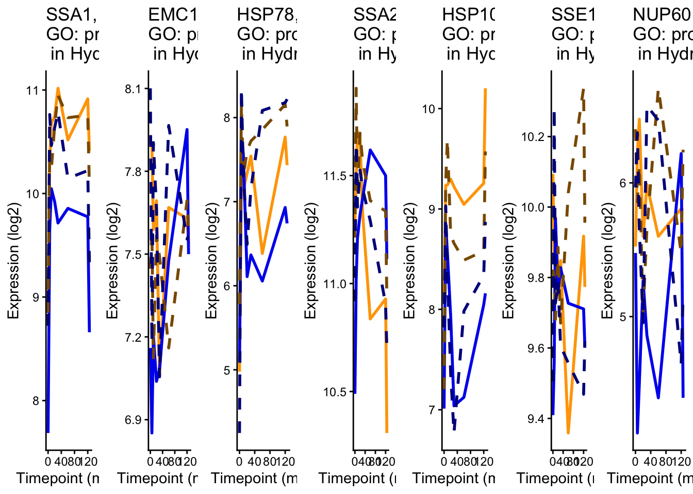
Conclusion: SSA2, EMC1, and SSE1 all have the same pattern in the parents: start higher in Scer, decrease in Scer and increase in Spar, no obvious pattern in hybrids. HSP104 perhaps has cis-based plasticity divergence
SWI4 has some cellcycle/mitosis/DNA metabolism genes:
test_idxs <- c("YBR088C", "YDR296W", "YPL127C", "YLR084C", "YLR183C")
test_genes <- left_join(tibble(systematic = test_idxs),
y = dplyr::select(yeastract_lookup, systematic, common),
by = "systematic")
test_tf <- "SWI4"
test_GO <- "GO: mitosis/DNA metabolism"
test_e <- "CC"
test_e_name <- LongExperimentNames[ExperimentNames == test_e]
plotlist = vector(mode = "list", length = length(test_idxs))
names(plotlist) <- test_genes$common
for (g in test_genes$common) {
test_idx <- filter(test_genes, common == g) |> dplyr::select(systematic) |> pull()
plotlist[[g]] <- plotGenes(test_idx,
.quartet = TRUE, .experiment_name = test_e,
.plot_titles = paste0(g, ", regulated by ", test_tf," \n",
test_GO, "\n in ", test_e_name))
}## `summarise()` has grouped output by 'group_id', 'experiment'. You can override using the
## `.groups` argument.
## `summarise()` has grouped output by 'group_id', 'experiment'. You can override using the
## `.groups` argument.
## `summarise()` has grouped output by 'group_id', 'experiment'. You can override using the
## `.groups` argument.
## `summarise()` has grouped output by 'group_id', 'experiment'. You can override using the
## `.groups` argument.
## `summarise()` has grouped output by 'group_id', 'experiment'. You can override using the
## `.groups` argument.ggarrange(plotlist = plotlist,
nrow = 1, ncol = length(plotlist))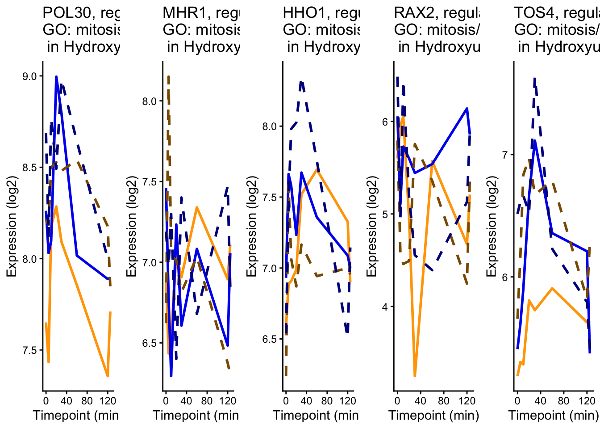
Conclusion: TOS4 and POL30 both have a trans-based spike in Spar not Scer
Conclusion: perhaps a trans-based spikes in Spar preempt a cis-based spike in SWI4
RPN4: stress response:
test_idxs <- c("YBL023C", "YDL140C", "YDR028C", "YDR159W", "YDR334W", "YDR372C",
"YFL024C", "YGL195W", "YMR186W", "YOR023C", "YOR025W", "YOR297C")
test_genes <- left_join(tibble(systematic = test_idxs),
y = dplyr::select(yeastract_lookup, systematic, common),
by = "systematic")
test_tf <- "RPN4"
test_GO <- "GO: stress response"
test_e <- "CC"
test_e_name <- LongExperimentNames[ExperimentNames == test_e]
plotlist = vector(mode = "list", length = length(test_idxs))
names(plotlist) <- test_genes$common
for (g in test_genes$common) {
test_idx <- filter(test_genes, common == g) |> dplyr::select(systematic) |> pull()
plotlist[[g]] <- plotGenes(test_idx,
.quartet = TRUE, .experiment_name = test_e,
.plot_titles = paste0(g, ", regulated by ", test_tf," \n",
test_GO, "\n in ", test_e_name))
}## `summarise()` has grouped output by 'group_id', 'experiment'. You can override using the
## `.groups` argument.
## `summarise()` has grouped output by 'group_id', 'experiment'. You can override using the
## `.groups` argument.
## `summarise()` has grouped output by 'group_id', 'experiment'. You can override using the
## `.groups` argument.
## `summarise()` has grouped output by 'group_id', 'experiment'. You can override using the
## `.groups` argument.
## `summarise()` has grouped output by 'group_id', 'experiment'. You can override using the
## `.groups` argument.
## `summarise()` has grouped output by 'group_id', 'experiment'. You can override using the
## `.groups` argument.
## `summarise()` has grouped output by 'group_id', 'experiment'. You can override using the
## `.groups` argument.
## `summarise()` has grouped output by 'group_id', 'experiment'. You can override using the
## `.groups` argument.
## `summarise()` has grouped output by 'group_id', 'experiment'. You can override using the
## `.groups` argument.
## `summarise()` has grouped output by 'group_id', 'experiment'. You can override using the
## `.groups` argument.
## `summarise()` has grouped output by 'group_id', 'experiment'. You can override using the
## `.groups` argument.
## `summarise()` has grouped output by 'group_id', 'experiment'. You can override using the
## `.groups` argument.ggarrange(plotlist = plotlist,
nrow = 2, ncol = ceiling(length(plotlist)/2))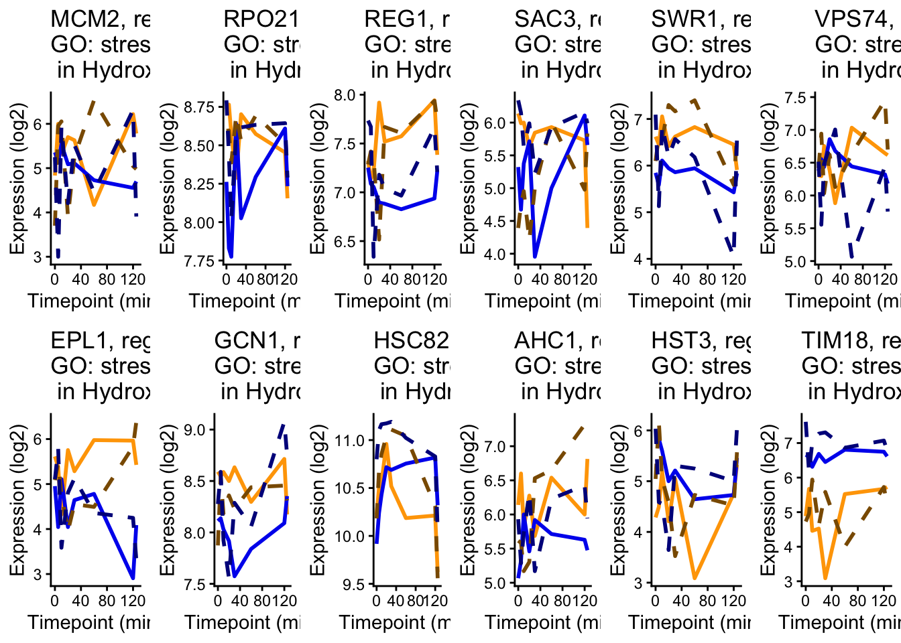
Conclusion: lots of plasticity divergence, not much based in cisRPN4: protein folding, maturation:
test_idxs <- c("YAL005C", "YDL143W", "YJR088C", "YML048W", "YMR186W",
"YCR008W", "YHR028C", "YKL040C", "YKL077W")
test_genes <- left_join(tibble(systematic = test_idxs),
y = dplyr::select(yeastract_lookup, systematic, common),
by = "systematic")
test_tf <- "RPN4"
test_GO <- "GO: protein folding/maturation"
test_e <- "CC"
test_e_name <- LongExperimentNames[ExperimentNames == test_e]
plotlist = vector(mode = "list", length = length(test_idxs))
names(plotlist) <- test_genes$common
for (g in test_genes$common) {
test_idx <- filter(test_genes, common == g) |> dplyr::select(systematic) |> pull()
plotlist[[g]] <- plotGenes(test_idx,
.quartet = TRUE, .experiment_name = test_e,
.plot_titles = paste0(g, ", regulated by ", test_tf," \n",
test_GO, "\n in ", test_e_name))
}## `summarise()` has grouped output by 'group_id', 'experiment'. You can override using the
## `.groups` argument.
## `summarise()` has grouped output by 'group_id', 'experiment'. You can override using the
## `.groups` argument.
## `summarise()` has grouped output by 'group_id', 'experiment'. You can override using the
## `.groups` argument.
## `summarise()` has grouped output by 'group_id', 'experiment'. You can override using the
## `.groups` argument.
## `summarise()` has grouped output by 'group_id', 'experiment'. You can override using the
## `.groups` argument.
## `summarise()` has grouped output by 'group_id', 'experiment'. You can override using the
## `.groups` argument.
## `summarise()` has grouped output by 'group_id', 'experiment'. You can override using the
## `.groups` argument.
## `summarise()` has grouped output by 'group_id', 'experiment'. You can override using the
## `.groups` argument.
## `summarise()` has grouped output by 'group_id', 'experiment'. You can override using the
## `.groups` argument.ggarrange(plotlist = plotlist,
nrow = 2, ncol = ceiling(length(plotlist)/2))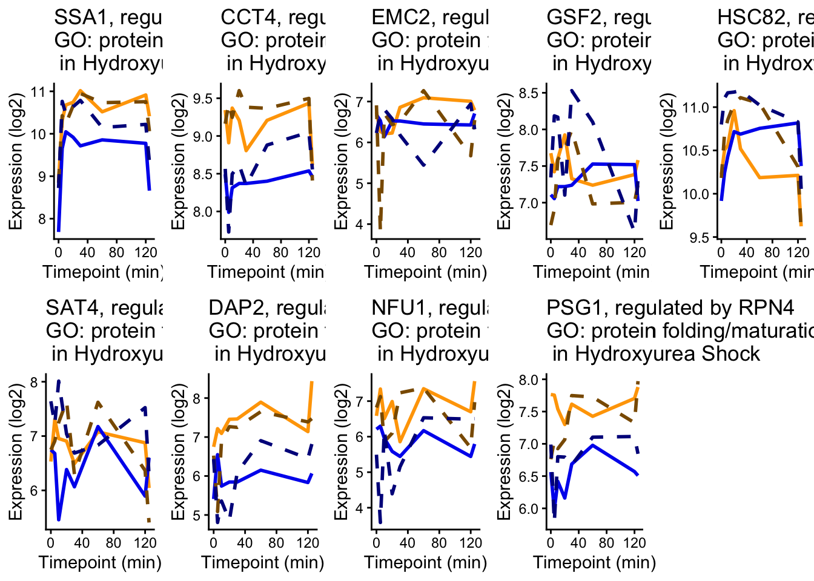
PDR3 CC: metabolism
plotGenes(.gene_idxs = c("YAL038W", "YHR174W"), .experiment_name = "CC",
.plot_titles = c("CDC19 and ENO2\n in PDR3 regulon \n(GO: metabolism)\n in HU Shock"), .quartet = FALSE)## `summarise()` has grouped output by 'group_id', 'experiment'. You can override using the
## `.groups` argument.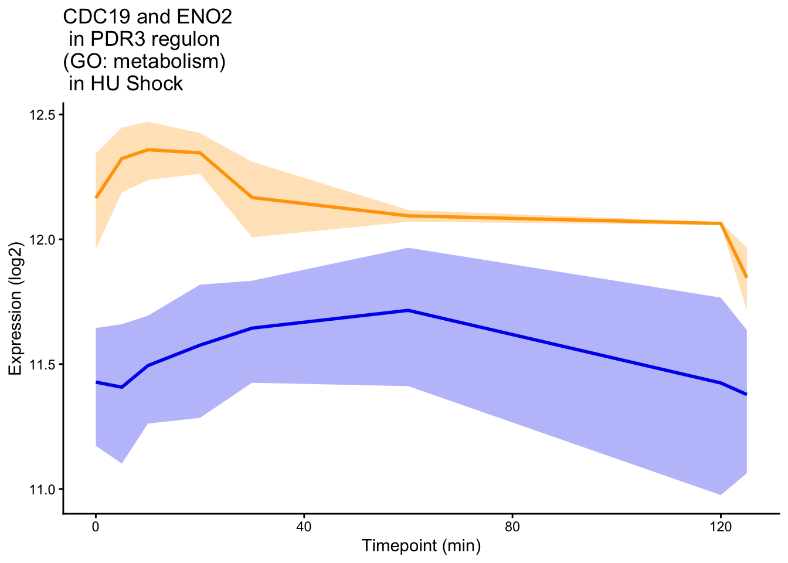
These two are both highly expressed, higher in Scer, and have Scer-only spike earlyThe above examples suggest that genes that are diverging in plasticity or level in cis may also have divergence in the other property. As more genes are diverging in level in cis, if we filter first for cis based level divergence and then for cis-based plasticity divergence, we’ll likely have a bigger set.
eff_thresh <- log2(1.5)
plotdf <- finaldf |> filter(plasticity == "diverged" &
level == "diverged") |>
mutate(cis_level = effect_size_allele > eff_thresh &
padj_allele < 0.05)
# cor, lower = more cis
ggplot(plotdf, aes(x = cis_level, y = cor_hybrid)) +
geom_boxplot(aes(color = cis_level)) +
stat_compare_means()## Warning: Removed 1 row containing non-finite outside the scale range (`stat_boxplot()`).## Warning: Removed 1 row containing non-finite outside the scale range (`stat_compare_means()`).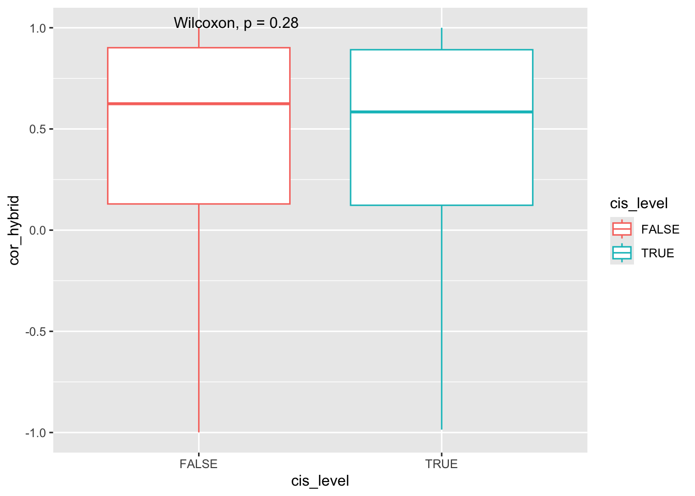
# scaled mean difference, higher = more cis
ggplot(plotdf, aes(x = cis_level, y = ABC_hybrid)) +
geom_boxplot(aes(color = cis_level)) +
stat_compare_means()## Warning: Removed 1 row containing non-finite outside the scale range (`stat_boxplot()`).
## Removed 1 row containing non-finite outside the scale range (`stat_compare_means()`).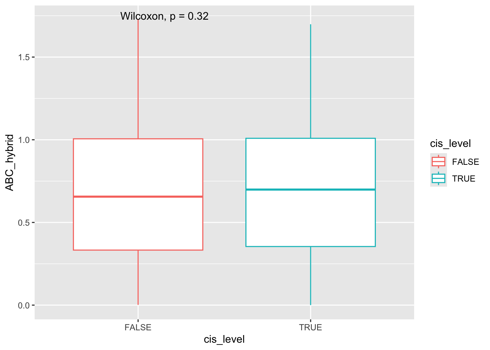
Conclusion: slight trends in the expected direction, but nothing major.
For each large regulon (top 5 in each environment, 2 from cold), we will look at the fraction of genes with conserved plasticity in each environment.
plotdf <- tfdf |> group_by(experiment) |>
mutate(rank = rank(-out_degree_e, ties.method = "first")) |>
ungroup() |> filter(rank <= 5) |>
dplyr::rename(c("home"="experiment", "tf"="gene_name"))
# adding fraction conserved plasticity in each environment
plotdf_pcts <- purrr::map2(plotdf$tf, plotdf$home, \(tf, h) {
home_mat <- regmats[[h]]
h_idxs <- finaldf |> filter(experiment == h) |>
dplyr::select(gene_name) |> pull()
regulon_idxs <- intersect(colnames(home_mat)[home_mat[tf,] > 0], h_idxs)
outdf <- purrr::map(ExperimentNames, \(e) {
e_plast_genes <- finaldf |>
filter(experiment == e & plasticity == "conserved") |>
dplyr::select(gene_name) |> pull()
e_genedf <- tibble(tf = tf,
home = h,
experiment = e,
n = length(regulon_idxs),
nConsPlast = sum(regulon_idxs %in% e_plast_genes))
return(e_genedf)
}) |> purrr::reduce(.f = bind_rows)
return(outdf)
}) |> purrr::reduce(.f = bind_rows)plotting:
gcn4 <- "YEL009C"
hsf1 <- "YGL073W"
pho4 <- "YFR034C"
p <- ggplot() +
geom_histogram(data = filter(plotdf_pcts, home != experiment),
aes(x = nConsPlast/n), fill = "grey") +
geom_vline(data = filter(plotdf_pcts, home != experiment),
aes(xintercept = mean(nConsPlast/n)), color = "black", linetype = "dashed") +
geom_vline(data = filter(plotdf_pcts, home == experiment),
aes(xintercept = nConsPlast/n), color = "red") +
# annotating example tfs
# GCN4
geom_vline(data = filter(plotdf_pcts, home == experiment &
home == "CC" & tf == gcn4), aes(xintercept = nConsPlast/n), color = "blue") +
# HSF1
geom_vline(data = filter(plotdf_pcts, home == experiment &
home == "Heat" & tf == hsf1), aes(xintercept = nConsPlast/n), color = "blue") +
# PHO4
geom_vline(data = filter(plotdf_pcts, home == experiment &
home == "LowPi" & tf == pho4), aes(xintercept = nConsPlast/n), color = "blue") +
facet_wrap(~factor(home,
levels = ExperimentNames,
labels = LongExperimentNames),
nrow = 1) +
theme_classic() +
theme(legend.position = "none",
axis.text.x = element_text(angle = 90, hjust = 1, vjust = 0.5)) +
scale_y_continuous(breaks = c(1:10)) +
xlab("fraction of regulon with conserved plasticity")
p## `stat_bin()` using `bins = 30`. Pick better value `binwidth`.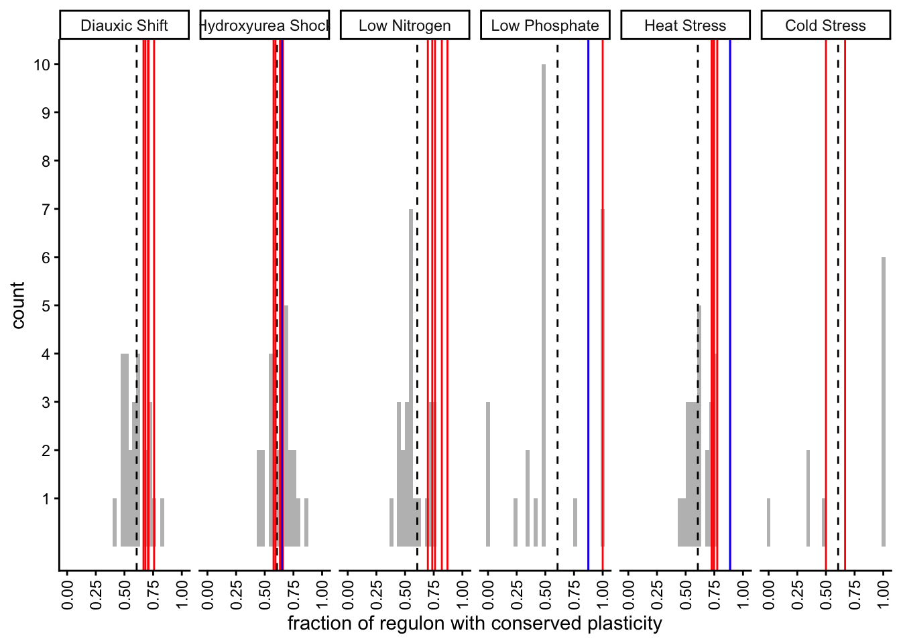
Outputting to pdf:
# pdf("paper_figures/Yeastract/histogram_regulons.pdf",
# width = 9, height = 2)
# p
# dev.off()Do any TFs Granger-cause a difference in their targets’ expression? (Archived this analysis b/c it was very sensitive to the number of timepoints in each experiment, but keeping the function in case it is useful)
testGrangerCause <- function(.tf, .target, .environment, .allele, .parents_or_hybrid) {
if (.parents_or_hybrid == "hybrid") {
cts_mat <- collapsed_allele[[.allele]]
info_df <- info_allele
}
if (.parents_or_hybrid == "parents") {
cts_mat <- collapsed[[.allele]]
info_df <- info
}
if (!(.tf %in% rownames(cts_mat)) | !(.target %in% rownames(cts_mat))) {
return(NA)
}
if (.tf == .target) { # no self-feedback allowed
return(NA)
}
test_df <- tibble("regulator" = cts_mat[.tf,
info_df$experiment == .environment],
"target" = cts_mat[.target,
info_df$experiment == .environment],
"timepoint" = info_df$time_point_num[info_df$experiment == .environment]) |>
arrange(timepoint)
if (var(test_df$regulator) == 0 | var(test_df$target) == 0) { # grangertest returns something other than NA for these, we want it to return NA
return(NA)
}
test <- tryCatch(expr = {grangertest(target ~ regulator, order = 2, data = test_df)},
error = function(e) {return(NA)})
if (!is.na(test)[1]) {
return(as.numeric(test$`Pr(>F)`[2]))
}
return(test)
}
# # tests for testGrangerCause
# test_regulator_idx <- regdf |> filter(regulator_common == "RPN4") |> dplyr::select(regulator) |> pull() |> unique()
# test_target <- regdf |> filter(regulator_common == "RPN4" &
# !(environment %in% c("YPD"))) |> dplyr::select(target, environment) |>
# slice_sample(n = 1)
# testGrangerCause(.tf = test_regulator_idx, .target = test_target$target,
# .environment = test_target$environment, .allele = "cer",
# .parents_or_hybrid = "parents")